| あなたの恋愛力をみがく 恋愛偏差値 Love Quotient | |
| 富田隆 | |
| SUMIDA出版 (2016) | |
【目次】
恋愛偏差値は、恋愛を実力アップ・レベルアップさせる〝便利な道具〟です
あなたは、自分がモテないのは〝生まれつき〟だと思っていませんか？
「きっとだめだ」を「きっとできる」に変えるだけで、恋愛能力はみがかれます
恋愛を成功させるために必要な五つの恋愛能力とは
自分の恋愛能力を知ってはじめて、正しい〝恋愛作戦〟が立てられます
〝恋愛偏差値〟は恋愛という舞台に立つ自分を映す〝鏡〟です
恋愛偏差値が、恋愛で失敗するほんとうの理由を教えてくれます
恋愛能力をみがく、〝体質づくり〟のための５カ条【まとめと対策】
恋愛に失敗するほんとうの理由から、彼氏獲得に必要な恋愛能力がわかります
１ 恋愛推進能力 （行動能力テスト）......これがないと、恋愛ははじまらない
セクシーな魅力の基礎は、元気な肉体と精神......基礎体力
〝見切り発車〟でもいい。まずは相手に接近することから......実行能力
服装ひとつ決めるのも、マニュアルに頼りきっていませんか......自発力
自分の〝苦手〟を克服すれば〝恋愛パニック耐性〟がみがかれます......安定力
自分のいちばんルーズな部分を、恋愛能力アップの第一課題に！.........自己管理能力
最後のひと押しをあきらめて、恋愛のチャンスを棒にふっていませんか......精神的持続力
「陽気」「元気」「のん気」が、恋愛に強い体質をつくります......楽天能力
こうすれば、「恋愛推進能力」がアップ！【まとめと対策】
２ 恋愛誘導能力 （知的能力テスト）......これがないと、恋愛は危険でいっぱい
洋服、髪型......相手のちょっとした変化のデータをインプット！......観察能力
「相手のことが何もわからない」では、怠 慢 と言われても仕方がありません......知識吸収能力
〝連想ゲーム方式〟で、彼氏に関する情報を〝恋愛作戦〟に役立てましょう......情報整理能力
ふられた理由を「相手が悪い」と考えていては、同じ失敗をくり返すだけ......抽象能力
いきあたりばったりのデートは、恋愛トラブルのもとになります......シミュレーション能力
長くつきあっているのに、いまだにキスができない理由とは？.........判断能力
ときには「やさしい女」でなく、「クールな女」になって彼を誘ってみましょう......合理性能力
こうすれば、「恋愛誘導能力」がアップ！【まとめと対策】
３ 恋愛拡大能力 （創造能力テスト）......これがないと、恋愛はうまくいかない
自分の「夢」をたいせつにする女性は神秘的な魅力を発散します......想像能力
〝発想〟の豊かな女性こそが、ほんとうに「おもしろい」......独創能力
デート中のハプニングこそ、自分をアピールする絶好のチャンス......柔軟性能力
彼にお金を使わせない〝２０００円デート〟。それでもあなたは楽しめますか......応用能力
彼氏の欠点が目につくようになったら、二人の関係が深まった証拠......批判能力
「なんでもおもしろがれる」のも、恋愛には欠かせない〝能力〟......好奇心能力
〝チャレンジ精神〟を秘めた女性は美しく輝く......チャレンジ能力
こうすれば、「恋愛拡大能力」がアップ！【まとめと対策】
４ 恋愛集中能力 （情熱能力テスト）......これがないと、恋愛はおもしろくない
〝理想の男性像〟を意識することが、情熱的恋愛への近道......ほれこみ能力
あなたは美しく泣けますか？......感動能力
彼氏との約束も守れない女性に、恋愛する資格はありません......誠実能力
「いい人」から「恋人」へ昇格するために必要な〝のめりこみ能力〟......没頭能力
ときには、ライバルに対する〝競争心〟をあらわにして自分を刺激......嫉妬嫉 妬 能力
〝おバカさん〟になれる女ほど、男性を喜ばせる〝才能〟を持っています......白己放棄能力
恋愛の沈 滞 ムードを吹き飛ばすには、〝ダメもと精神〟で当たってくだけましょう......ギャンブル能力
こうすれば、「恋愛集中能力」がアップ！【まとめと対策】
５ 恋愛建設能力 （コミュニケーション能力テスト）......これがないと、恋愛は成就しない
彼氏の喜び、悲しみをいっしょに感じることが、恋人への第一歩......共感能力
あなたは彼氏を〝自分好みの男〟に変えようとしていませんか......受容能力
彼氏のしぐさ、身なりから発信されている信号をキャッチしましょう......ボディランゲージ能力
口下手なら〝聞き役〟に徹して、彼氏の気持ちをつかみましょう......言語的強化能力
好きなら、あれこれ考えずにひと言「好きです」と言えば大丈夫......伝達能力
目的のない長電話で、「退屈女」「迷惑女」になっていませんか......目標設定能力
どんなに好きでも、遠くで見ているだけでは恋愛は発展しません......機会開発能力
こうすれば、「恋愛建設能力」がアップ！【まとめと対策】
五つの恋愛能力の〝総合バランス〟で見る、タイプ別〝恋愛作戦〟の立て方
恋愛偏差値は、五つの恋愛能力の〝総合バランス〟で決まります
●恋愛偏差値早見表
「総合恋愛偏差値」から、自分自身の〝恋愛の傾向と対策〟がわかります
「恋愛偏差値分析チャート」が教える、あなたの〝強化ポイント〟
「コミュニケーション能力」を軸に、正しい〝恋愛作戦〟を立てよう
ときには「聞き上手」を演出して、恋愛を長つづきさせよう......体育会系突進型
〝いい人〟から〝情熱的な女〟への変身を、まず第一の目標に！......恋愛不完全燃焼型
挨拶をする、話しかけるという小さな成功体験が、恋愛の大きな自信を生みます......男性不慣れ型
男友だちがほめてくれたアピールポイントを、〝恋愛作戦〟の柱に......女子校内 弁 慶 型
「基礎体力」をつければ、好きな男性を追っかける〝気力〟もわいてきます......タナボタ無気力型
恋愛能力の高さに甘んじていると、たいせつな彼氏を失うことに......恋愛の達人型
〝恋は盲目〟から脱出して、彼氏を〝観察〟することからはじめよう......ひとり芝居型
頭のなかにある〝彼氏の偶像〟を破壊するのが、〝恋愛作戦〟の基本......アイドル研究会型
こうすれば、「恋愛偏差値」がアップ！【まとめと対策】
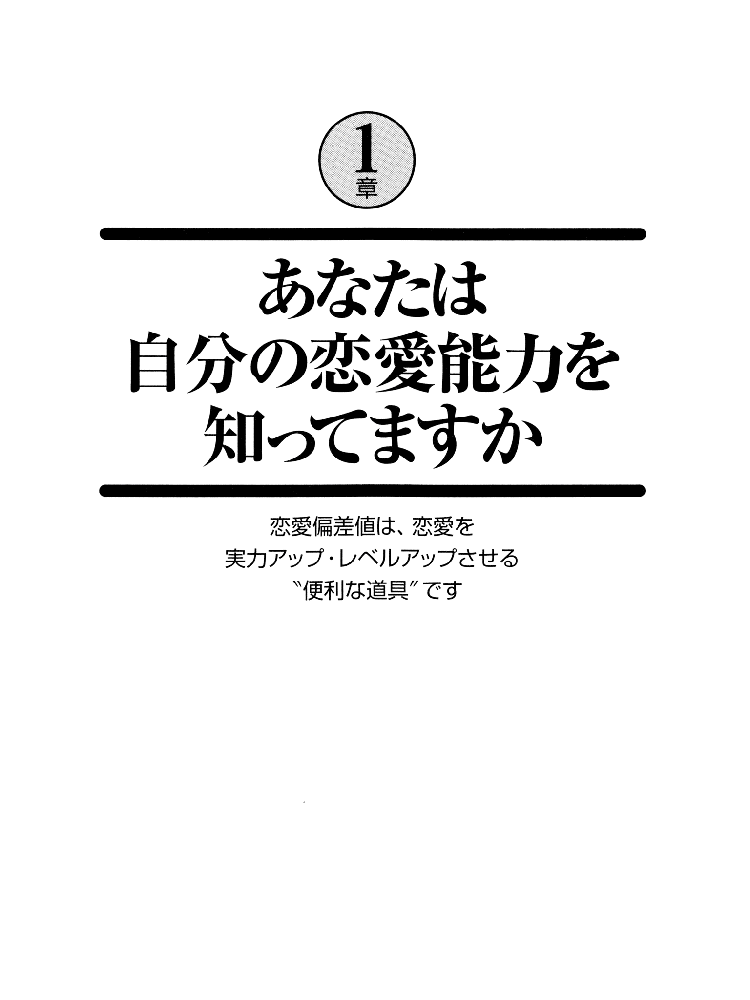
あなたは、自分がモテないのは〝生まれつき〟だと思っていませんか？
「彼氏ができない」「好きになっても、ふられてばかり」「つきあいはじめても、一カ月もすればたいてい彼から別れを告げられる」......。若い女性のほとんどが「なぜ、モテないのか」「なぜ、恋愛がうまくいかないのか」と何かしらの悩みを抱いているようです。
恋愛の失敗パターンは人それぞれですが、私から見ると「なるほど」とうなずける、彼女たちに共通した大きな原因があります。こうした女性たちに「恋愛がうまくいかない原因は何だと思う？」と聞くと、たいてい答えは決まっているものです。「モテる女の子とモテない女の子は、もともと決まっているんだもの」「顔のかわいいコにはかないっこない。カッコいい男の子は、みんなかわいいコにとられてしまう」「アタシなんて、ブサイクだし、胸も小さいから......」と、口をそろえて言うのです。
要するに恋愛がうまくいくかどうかは、顔やスタイル、もっと言えば家柄など、その人が持って生まれたもので決まる、モテない女は何をやってもだめなのだと思っているわけです。
これでは、いくら「彼氏がほしい！」と思っていても、願いはかなえられないでしょう。
自分のまわりにいる、彼氏のいる女性、彼とうまくやっている女性を思い出してみてください。みんながみんな、うらやましいくらいの美女というわけではないでしょう。あなたよりも太っていて、見た目もパッとせず、イケてない女性もいるはずです。そうした女性を観察していればわかることですが、じつは彼とうまくやっていくためにちょっとした努力をしているのです。
恋愛は、一種の能力のようなものなのです。モテるモテないは生まれつきではなく、恋愛を成功させるために必要な能力をどれくらい持っているかで決まるものなのです。私は、この力、能力のことを〝恋愛力〟、〝恋愛能力〟と呼んでいます（以下恋愛能力）。
恋愛能力というと、何か特別な能力と思う人がいるかもしれませんが、そんなことはありません。たとえば読み書きソロバンにはじまり、自転車に乗る、クルマを運転するといった能力とまったく同じなのです。
つまり、人間が成長していくなかで自然に、あるいはちょっとした練習を積むことで、だれでも身につけていけるものだと考えてもらっていいのです。
まず、私が最初に言いたいのは、「自分で自分に〝モテない女〟のレッテル貼りをしてはいけない」ということです。生まれつきモテない女などいません。恋愛能力をみがけば、だれでも恋愛を成功させることができるようになるのです。
「きっとだめだ」を「きっとできる」に変えるだけで、恋愛能力はみがかれます
あなたが初心者で、テニスの上手な人と試合をすることになったとしましょう。もちろん勝てるはずのない試合です。そんなとき、「こんなのつまらない」とやめてしまうか、「１点とれた！」と喜べるか。じつはここに、恋愛を成功させることができるかどうかの違いが現われるのです。たとえテニスをやった経験がなくても、どんなにスポーツが苦手でも、ラケットの握り方、サーブのフォーム、ボレーの打ち方とひとつひとつのテクニックを覚えて、練習を積んでいけば、だれでも次第に実力はレベルアップしてくるものです。
恋愛もこれと同じで、現在どんなに「モテない」と悩んでいても、恋愛能力は、みがけばだれでもかならずアップさせることができるのです。
私はこれまで、多くの若い男性や女性の恋愛の悩みや相談を受けてきました。私なりにいろいろとアドバイスをしてきましたが、たとえば「彼・彼女の魅力的なところを、どんどんほめてあげなさい」というたったひとつのアドバイスで、恋愛を成功させることができる人と、なかなか結果を出せない人がいることに気がついたのです。数カ月後にはイケメンの彼氏をつれて私のところにやってくる女性は、どんなに恥ずかしくても、とにかく行動に移してみる傾向にあります。一方、ふたたび私のところに沈んだ表情で悩みを打ち明けにくる女性は、結局何も新しい行動を起こしていないのです。
恋愛能力がみがかれにくい人というのは、「どうして自分の恋愛はうまくいかないのか」と考えるより、「どうして自分は男性に愛されないのか」と受け身的に考えてしまう人です。恋愛がうまくいかないとき、こういう人は、「相手に見る目がなかったから」「いつかアタシに声をかけてくれる男性が出てくるにちがいない」というふうに考えます。自分の力で彼氏を動かそうとか、働きかけようという発想がないのです。
一方、恋愛能力をアップさせやすい人というのは、「どうすれば思いが伝わるだろう」「どうすれば、彼に好かれるだろう」とつねに能動的に考えます。相手に対する働きかけを中心に発想していきますから、自分からすすんで行動を起こせるわけです。
一般的に言って能力とは、対象に対して自分が行動を起こしてそれが成功したとき、はじめて身についたり、みがかれたりするものです。それをはじめから「だめだ」「できない」と動こうとしなければ、積極的に行動している人にくらべて、能力アップ率が落ちるのは言うまでもないことです。
好きな男性を恋人にしたいと思うなら、まずポジティブに発想していくクセをつけることです。
恋愛を成功させるために必要な五つの恋愛能力とは
受験の科目に英語や数学などがあるように、恋愛にも、恋愛を成功させるために必要な〝科目〟があります。それが、五つの恋愛能力です。ここでは、「行動能力・知的能力・創造能力・情熱能力・コミュニケーション能力」の五つの恋愛能力について説明していきましょう。
まず、最初の「行動能力」は、自分から積極的に動くためのエネルギー源を生み出す能力のことで、〝恋愛推進能力〟と言いかえられます。恋愛を成就させるためには、自分の気持ちを動かすエネルギーがなければはじまりません。たとえば、思いを寄せている男性に、たとえ一度断られてもめげることなく向かっていく〝タフさ〟が、この「行動能力」なのです。この能力がないと、恋愛ははじまらないと言っても過言ではないほど、基本的な能力なのです。
つぎの、「知的能力」とは、いわば恋愛という荒波をうまく乗りきるための〝舵 取り〟の役目を果たすものです。好きな男性ができると、だれもが自分の欲求ばかり考えて、相手との関係が見えなくなってしまいます。自分の気持ちをうまくコントロールし、彼氏へのアプローチや、二人の関係を正しく導いてくれる、〝恋愛誘導能力〟なのです。
「創造能力」とは、自分たちの恋愛をオリジナルのものに仕立てていく、〝恋愛拡大能力〟です。情報が氾濫している現代においては、たとえば男性の心理ひとつとってみても、雑誌に載っている情報をうのみにしがちです。ところが、恋愛というものは個別的なものですから、一人一人違います。このような、一般論だけでは補えない部分を、自分で創意工夫し、恋愛に活力を与えるための能力なのです。
四番めの能力、「情熱能力」とは、ひと言でいえば恋愛の〝愛〟の部分を深めていくための、〝恋愛集中能力〟と言えるでしょう。動物が見せる激しい求愛行動に近い、恋愛を根源の部分で支える能力とも言えます。心理学では「人を愛するための三要素」というものがありますが、それは、親しみ・誠意・情熱だと言われ、その三要素から情熱が欠けると、ふつうの友情になるのです。それほど、人を愛するためには欠かせない重要な能力なのです。
最後の「コミュニケーション能力」は、この五つの恋愛能力のなかでいちばん重要な能力で〝恋愛建設能力〟とも言えるでしょう。くわしい説明は３章で述べますが、恋愛能力のなかでもとにかく重要な役割を果たす能力です。
以上の五つの能力をみがくことが、恋愛偏差値をアップさせることにつながるのです。
自分の恋愛能力を知ってはじめて、正しい〝恋愛作戦〟が立てられます
好きな男性とのデートにこぎつけ、愛の告白をし、二人の関係を深めて、長つづきさせていく。このように恋愛を成功させるためには、さきほど述べた五つの恋愛能力が必要になるわけですが、じつは、自分の恋愛能力を知ることが、恋愛を成功させるためにまず必要なのです。
たとえば、受験を例にとって考えてみてください。志望校を決めたら、たいていの受験生は模擬試験を受けるはずです。自分の実力がどれくらいか、志望校への合格率はどれくらいか、どの科目が弱いのかを知るためです。模試の結果という客観的な資料をもとにして、志望校突破のための〝受験作戦〟が立てられるわけです。自分の実力を知らなければ、どんなに行きたいと思っている大学があっても、合格のための対策は立てられません。
恋愛もこれと同じなのです。まずは自分の恋愛能力を正しく知らなければ、彼氏を獲得するための、あるいは彼との仲を深めるための〝恋愛作戦〟は立てられません。
恋愛能力とは、前にもお話ししたように、特別な能力ではないのです。私たちが日常生活をおくっていくうえで、また、仕事や人間関係をスムーズに進めていくために、ふだん使っているさまざまな能力が、そのまま恋愛能力を構成している要素となっているのです。
たとえば、仕事で交渉をまとめようと思ったら、自分側の主張をするだけでなく、相手の話にも耳を傾ける〝聞き上手〟にならなくてはいけないし、ときにはあきらめずに粘る力も必要でしょう。こうした仕事やふだんの人間関係のなかで使っている能力が、じつは彼に「僕の話を真剣に聞いてくれるやさしい人」「そんなにオレのことを想ってくれているのか」と思わせる力として、恋愛の場面で生きてくるのです。
２章のチェック項目を見て、なぜその能力が恋愛に関係しているのかと疑問を感じる方もいるかもしれませんので、すこし説明しておきましょう。その人個人の持つ能力は、ふだんの行動パターンのなかに反映されています。そうして現われた行動パターンを心理学的な手法で分析することで、その能力のレベルを知ることができます。
本書では、心理学的な視点から日常の行動をチェックするテストを作成し、それぞれの人の恋愛能力を調べていくことにしました。そこで私は、さきほど紹介した五つの恋愛能力をそれぞれ七つの能力に分解してみたのです。それらを個別にチェックしていくことで、たとえば「行動能力」全体の能力がどれくらいかをつかんでいこうというわけです。まず、自分の恋愛能力を知ることが、正しい〝恋愛作戦〟を立てるために必要なのです。
〝恋愛偏差値〟は恋愛という舞台に立つ自分を映す〝鏡〟です
自分の恋愛能力をはかったあとは、今度はそれをもとに〝得意科目〟や〝苦手科目〟を分析して、正しい〝恋愛作戦〟を立てる必要があります。しかし、すぐあとで説明するように、単純に〝恋愛作戦〟の得点を合計しただけでは、現実の恋愛で通用する〝作戦〟は立てられません。そこで必要になってくるのが、現時点の得点を、現実の恋愛を想定しながら相対的に評価する〝ものさし〟なのです。それが、本書のテーマとなっている〝恋愛偏差値〟なのです。
「相対的に評価するものさし」と言うと、わかりにくいかもしれません。そこで、受験の偏差値を思い出してください。偏差値というのは、自分の得点が全体のなかでどの程度の水準にあるのかを教えてくれるものです。言うまでもなく入試というのは、他人との戦いです。たとえば定員が１００人の大学を１０００人受けたとして、３００点満点の９割＝２７０点取れたとしても、１０００人中の１００人がすべて２７１点以上取っていれば、落ちてしまうのが現実です。９割の得点を取れるからといって受かるとはかぎらないし、逆に４割しかとれなくても受かることだってあるのです。つまり、まわりの受験生の実力を把握し、そのなかで自分がどの位置にいるかを示す偏差値がなければ、得点だけで正しい受験作戦を立てることはできないのです。
恋愛もこれと同じで、全体のなかで自分がどの位置にいるかを知ることで、ライバルとの競争に勝つことができるのです。合コンでも「あのコさえいなかったら、彼はワタシのものだったのに」ということが、一度や二度はあったはずです。
恋愛でもライバルたちの能力を知っておかなければ、彼を獲得するための正しい〝恋愛作戦〟は立てられないのです。
そこで今回作成した恋愛偏差値チェックテストを、関東地区（一部関西地区）の10 代後半から30 代前半の独身女性を対象に１４０人の方に実施してもらいました。その解答データを集計したものが、あなたの恋愛偏差値を出すための資料となっています。
受験時代、偏差値にさんざん苦しめられた思い出のある人は、「恋愛も偏差値で決まるなんて」と、うんざりされるかもしれません。ですが、恋愛偏差値に関しては、気軽な気持ちで受けていただきたいのです。出てきた偏差値が低かったからといって、受験偏差値のように〝志望校〟を変更しなければならないといったものではありませんし、時間のかかる受験勉強とちがって、恋愛能力などというものは、ほんとうにちょっとした心がけで、すぐにみがかれるものだからです。
恋愛偏差値が、恋愛で失敗するほんとうの理由を教えてくれます
私のところへ送られてくる読者からの手紙を見ていますと、「どうしてもカレができない」「友だちから恋人の関係になかなか進めない」という内容のものが圧倒的に多いのです。好きな男性はできるのに、なかなか自分の気持ちを相手に伝えられない。一大決心をして彼に気持ちを打ち明けても、ときすでに遅く、「最近、彼女ができたんだ」とふられてしまうパターンが少なくないようなのです。こうなってしまうと、「自分は男性と縁がないんだ」「ずっと彼氏ができないかもしれない」と、どんどん消極的になりがちですが、ここで負けてしまってはいけません。
恋愛で成功するためには、「自分のどこがよくなかったのか」「どこで失敗したのか」と、自分の恋愛能力の〝弱点〟を見つけることがたいせつです。そうでないと、いつまでたっても同じことをくり返してしまうのです。本書で導き出す恋愛偏差値の大きな特徴は、このような恋愛能力の〝弱点〟や、これまで知らずに陥 っていた失敗の原因など、あなたの大づかみな〝恋愛傾向〟がわかる点です。自分の恋愛能力のどんなところを集中的にみがいていけばいいのかを見つけることができ、具体的な〝恋愛作戦〟も立ってくるのです。
また、恋愛偏差値を知ることで、いままで自分が気づかなかったような〝長所〟もわかります。恋愛がうまくいかないと、つい自分に自信が持てなくなりがちです。しかし、だれにもかならずみがけばもっと光る〝長所〟があるのです。自分の〝得意科目〟を伸ばしていくことも、恋愛能力をみがくためにはとてもたいせつなことなのです。好きになった男性に、自分のどの部分をアピールしていけばいいのかをよく認識しておけば、それを〝武器〟にして、いままでとはちがったアプローチで成功をつかむこともできるのです。
それにはまず、２章の35 項目のチェックテストを実施してください。そして、そのチェックテストの合計得点を出します。このチェックテストの結果から、恋愛偏差値が出てくるわけです。
２章では、各能力の解説、その能力を恋愛でどう生かしていくか、そして能力のみがき方を解説していますので、自分のチェックテストの得点が低い能力については、とくに念入りに読んでほしいと思います。総合的な〝恋愛能力〟のバランスを見るには、そのあとの３章で、出てきた恋愛偏差値を、〝恋愛偏差値分析チャート〟に反映します。このチャートは、あなたのどこをどう伸ばし、どの能力を最大限に生かせば恋愛で成功できるかという、トータルな〝恋愛作戦〟を立てるうえでの「作戦書」になるものなのです。
では、つぎの章から、さっそくチェックテストをはじめてください。
恋愛能力は、日々の実践でみがこう１
恋愛能力をみがく、〝体質づくり〟のための５カ条【まとめと対策】
この章では「なぜ恋愛は能力なのか」「恋愛能力とはどんなものなのか」を中心にお話ししてきましたが、最後に、恋愛能力をみがく〝体質〟に自分を変えていくためにはどうすればいいかを、もう一度まとめておきましょう。
恋愛能力をみがくための〝五つの心得〟
一、「自分はモテない」という〝レッテル〟を、自分に貼らないようにする。
二、モテるモテないは、スタイルや顔の良さ、さらには生まれつきだという間違った思い込みを、いますぐに捨てる。
三、恋愛能力とは、特殊な能力ではなく、ふだんの生活や仕事のなかで発揮している、ごくふつうの〝能力〟であることを知っておく。
四、「いつかは理想の男性が現われる」という受け身的な発想をやめ、「どうすれば理想の男性をゲットできるのか」と、能動的に物事を考える。
五、「だめだ」「できない」と思わずに、「ダメもとでやってみよう」という気持ちで自分から動けるように、いつでも腰を軽くしておく。
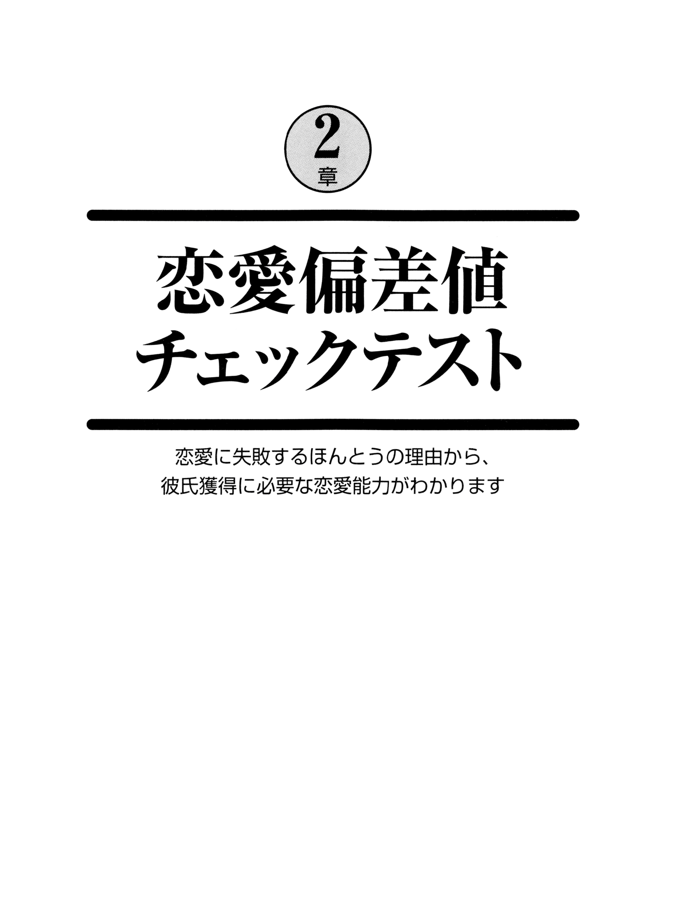
［この章のはじめに］
この章では、いよいよ「恋愛偏差値チェックテスト」により、あなたの恋愛能力を得点化していきます。まず、次からはじまる、35 項目のチェックテストを行なってください。それぞれの恋愛能力のチェックテストのあとには、その能力が恋愛の場面でどう生かされるのか、その能力をどうみがけばいいのかを解説しています。３章で自分の恋愛偏差値と、自分の恋愛の〝弱点〟を知ったら、もう一度この章に戻って〝弱点〟能力のみがき方を確認してください。実際に恋愛偏差値を出していく方法は、３章で詳しく解説しています。まずは、「チェックテスト実施の注意点」を読んだうえで、チェックテストに挑戦してみましょう。
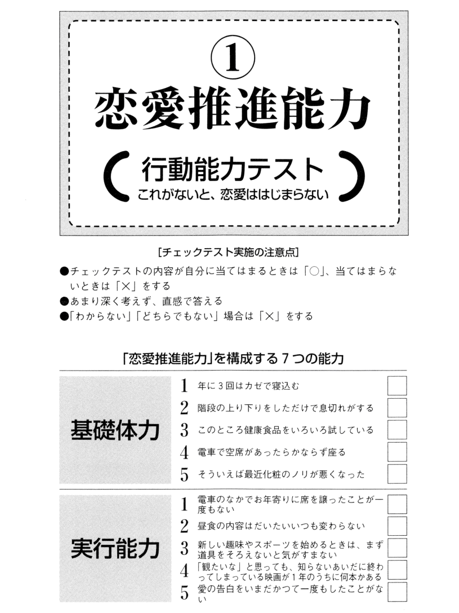
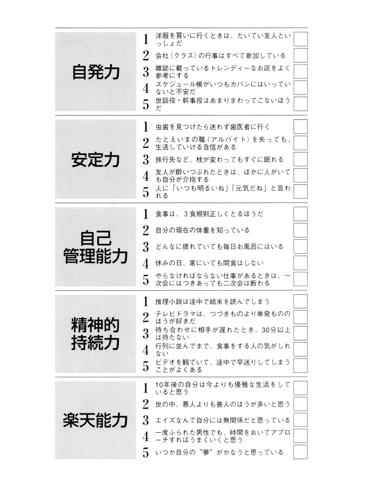
恋愛推進能力のみがき方（１） 基礎体力
セクシーな魅力の基礎は、元気な肉体と精神
「待てども待てども、ときめきを感じる男性が現われない。なぜわたしのまわりには〝いい男〟がいないのでしょう」などと思っている女性の話をよく聞きます。
しかし、その原因が、じつはまわりの男性ではなく、自分自身にある場合が少なくないのをご存じでしょうか。
こうした女性の多くは、恋愛をするうえでたいせつな、「基礎体力」が十分に備わっていないのです。肉体的に自信がない状態では、精神的にも活力が生まれません。そうなると、異性を見てもときめく気持ちが生じにくいばかりか、かりに「いいな」と思う男性がいたとしても、「彼とつきあいたい」「彼とデートをしてみたい」という気持ちにまでたどりつきません。
そうなると、「ああやっぱりワタシの求めていた男ではなかったのよ」と、自分を傷つかないように守る心理的メカニズムが働き、結局〝いい男〟はまだ現われていない ことになってしまうのです。
ヒトには健康な子を産みたい、より強くたくましい遺伝子を残したいという、原始時代からの潜在的な欲求があります。女性が健康的な男性を結婚相手に求めるように（これは、20 代の独身女性に「結婚相手に求めるものは？」と聞くと、たいてい「健康」が一位にあげられることからも裏づけられます）、男性もまた健康的な女性を求めています。「ピチピチ」「はじける若さ」などの表現が男性誌にあふれているのは、このためです。
この「基礎体力」はもちろん恋愛をはじめるときだけでなく、彼氏とつきあいはじめたあとの恋愛を〝推進〟させるためにも欠かせません。せっかくの楽しいデートで、貧血を起こしたり、スポーツの途中で倒れてしまうようでは、あまり魅力的な女性とは思われません。それに「基礎体力」不足はなにごとに対してもあなたを消極的にしがちで、せっかくのチャンスをつかみそこなうことにもなるのです。
「基礎体力」を強化するためには、ストレッチとかウォーキングといった身近なことからはじめれば十分です。そしてこのとき、駅までの時間が五分短縮できたというように、進歩を意識するようにすれば、やる気も起き、長つづきさせられます。
また、電車に乗ってもすぐに空席を探すといったことが日常となっているなら、気をつけたほうがいいでしょう。
逆に、エレベーターがあっても積極的に階段を利用するといった、ちょっとした心がけが、自然に「基礎体力」アップにつながっていくのです。
恋愛推進能力のみがき方（１） 実行能力
〝見切り発車〟でもいい。まずは相手に接近することから
隣の課に、素敵だなと思う男性がいる。しかし、二人きりで会う勇気が出ない。誰かが合コンを企画してくれるまで、もうすこしチャンスを待とう......。気になる男性とデートをするのは、だれしも勇気のいることですが、じつは、このようにきっかけづくりをあと延ばしにしたために、せっかくの恋愛の芽を自分でつみ取ってしまっている人が多いのです。
恋愛は、歩きながら、ときには走りながら行なうものです。十分体勢を整えてからおもむろに「ハイ、スタート」というものではありません。見切り発車でもいいのです。「好き」と思ったら、すぐに行動に移す「実行能力」が恋愛には必要になってくるのです。この「実行能力」がないと、恋愛を〝推進〟していけません。「実行能力」がものを言い、恋愛の危機を乗り越えたという例もあります。
つきあって二年になる二人が、あるときケンカをしてしまいました。「しばらく会わない」と互いにそっぽを向いて別れたのですが、その日の夜中に「さっきはごめん」と彼女が彼の部屋を訪れたのです。夜中の訪問など相手にとっては迷惑にちがいありません。
でも、ますます嫌われるかもしれないというリスクを背負ってまでも、「どうしてもひと言あやまりたくて」という彼女の行動力に彼は感激し、二人は危機を見事に乗り切ることができたのです。
勇気が出ない、すぐに行動を起こせなくて実行力に欠けるという人は、目標の立て方が下手な人でもあります。こういう人でも、大目標を小さな下位目標に分解してみる〝スモールステップ方式〟をとれば、行動に移すのは比較的簡単です。つまり、最初から「彼の恋人になる」と〝大目標〟を立てて意気込むから、自分で自分にプレッシャーをかけてしまうのです。これを「ランチをいっしょに食べよう」など、具体的な〝小目標〟に変えれば、それほどプレッシャーもかからないし、行動にも移しやすくなります。まず、自分にできることからはじめてみればいいのです。
ふだんは少々引っ込み思案な人でも、この実行力をみがく訓練をしておけば、恋愛の場面でいざというときに実行に移せるようになります。この能力をみがくためには、フットワークの軽い先輩なり、友人と行動するのも一案でしょう。遊び上手な人、ノリの軽い人などのマネをして、考えていることをすぐ行動に移すクセを体にしみこませるのです。また、スポーツをはじめるのもおすすめです。
テニスやゴルフなど、スポーツは「実行能力」と同時に「基礎体力」も養え、恋愛偏差値を上げるには一石二鳥です。
恋愛推進能力のみがき方（１） 自発力
服装ひとつ決めるのも、マニュアルに頼りきっていませんか
好きな男性に対して自分から積極的に動く人と、チャンスが訪れるまで行動を起こさない人がいます。当然のことながら、両者のあいだでは、恋愛経験の量もチャンスをつかむ率もちがってきます。ここでいう「自発力」とは、恋愛の対象である男性にかぎらず、あらゆる対象に向かって、自分から自発的に行動を起こせる能力のことです。
最近の若者を見ていると、〝待ち〟の姿勢の人がひじょうに多いと思います。たしかに現代の消費者社会のなかでは、じっと待っていても、だれかがほしいものを好みの形にして与えてくれますから、わざわざ自分で苦労することもないのでしょう。ファッションひとつにしても、雑誌が教えてくれる流行を適当に追っていれば、〝ダサイ〟と言われることもありません。こうした〝待ちの姿勢〟を私は〝消費者根性〟と呼んでいますが、「いつかいい男がやってくるわ」という〝消費者根性〟丸出しでは、すべてが雑誌のマニュアル通りで、恋愛の対象など見つけられないし、いい恋愛もできないのです。
「自発力」のある人というのは、言いかえれば、自分のなかにある欲望に気がついている人です。自分が何をしたいのかを知っているから、いま何をすればいいのかがわかるのです。何かを追っかけて生きているわけです。
一方「自発力」に欠ける人は、この欲求のレベルが低いのです。心理学的にいっても、ふだんから自分の欲望に敏感になっていないと、欲望のレベルも低下し、行動も鈍麻してきます。欲望のレベルがより高度な人ほど、より積極的に行動しやすいのです。
恋愛は、そのものが欲望です。「彼のことをもっと知りたい」「彼といっしょにあの映画を観たら、どんな感想を語ってくれるかなあ」といったさまざまな欲望が、恋愛を動かすエネルギーになるのです。自分の欲望に鈍感な人は、恋愛の場面においても、何をどう行動すればいいのかわからなくなるのです。いつも好きな彼を遠くから見つめているだけで終わってしまうのは、この「自発力」が欠けているからなのです。
この「自発力」をみがくには、まず自分の欲望を自分で認識することです。そのためには、気のりしないおつきあいを断る勇気も必要です。仲間たちだけで行動していると、いつの間にか自分で考えることができなくなり、自分の欲望にも鈍感になってしまいます。
一人っきりになって何もしないでいると、自然に何かをしたくなっていきます。そういうときに心の底から湧いてくる欲望は本物と言えるでしょう。ときには、意識的に「何もしない」時間を持つことで、「自発力」がつき、恋愛偏差値を高めていくことができるのです。
恋愛推進能力のみがき方（１） 安定力
自分の〝苦手〟を克服すれば〝恋愛パニック耐性〟がみがかれます
最近、若い男性から「石頭ギャル」の話を聞かされることがあります。
たとえば、デートでいったテーマパークが満員で入場制限となり、そこで彼は目的地を変えて近くの水族館に向かったのですが、彼女のほうは一日中ずっとこの悲劇を嘆 き悲しみ、あげくの果てには彼にまで八つ当たりする始末。この後、二人の関係が急速に冷却化したことは言うまでもありません。
これにかぎらず、デート中に、昼食を食べる予定の店が休業中だったとか、遊園地で雨が降ってきたなどといったハプニングが起きたとき、すぐにパニック状態になり、彼を責めたりイライラするようでは、「やさしさがない」「心が狭い」とあきれられ、恋愛対象としては役不足と思われても仕方のないところです。
恋愛にハプニングや障害はつきものです。いつも平穏な道がつづくわけではなく、山あり谷ありの難所に出会うことも多いでしょう。このとき、自分には無理だとすぐに弱音をはいたり、逃げ出したりというのでは、恋愛を〝推進〟させることはできません。
それには、アクシデントに出会ったときに起こるストレスに打ち勝つ能力、つまり、「ストレス耐性」が求められるのです。
最近、「癒 し系」と呼ばれる女性たちが、やたら男性にもてています。ところがこの癒し系というイメージをさらにつっこんで分析していくと、「安定感」や「包容力」「ゆったりとくつろいだ感じ」などの要素が表われてきます。こうした特性は、いまの時代だけではなく、伝統的な文化のなかでも女性の「徳目」として尊重されてきたものなのです。それが、時代が変わり、経済情勢なども厳しさをます現代になってますます、男性に安心感や癒しを与えられることが要求されるようになったのです。
この安心感を与えるために必要なのが、ものに動じない、情緒的に安定している、過 敏 すぎないということであり、これらを総合した能力が「安定力」です。
気分の変動はだれにでもあります。しかしこの「安定力」が欠けると、必要以上にものごとに過敏に反応してしまいます。
「安定力」をみがくには、とにかく修 羅 場 に慣れることがたいせつです。あなたが苦手なもの、たとえば歯医者、ホラー映画、ピーマンなど、自分から向かっていってみましょう。いままで避けてばかりいたものに挑戦し、克服しようと努力することで、彼氏とつきあうなかで起こる、さまざまなアクシデントや障害を乗り越える〝恋愛パニック耐性〟を身につけられ、「癒し系」という信頼を勝ち取れるようになるはずです。
恋愛推進能力のみがき方（１） 自己管理能力
自分のいちばんルーズな部分を、恋愛能力アップの第一課題に！
「ちょっと前までは、美人で派手で、気楽につきあえる女がよかったけど、そういうのはもう飽きたなあ。まじめに恋愛してくれる、きちんとした人がいいよなあ」。これは、私の教え子の男性の発言です。遊び人だった彼もようやく心を入れかえ、だれかと家庭を持ちたいとまじめに考えはじめたのです。こうなると、顔やスタイルという外見だけを〝武器〟にする女性は、あまり相手にされなくなります。
彼の言う「きちんとした人」というのは、周囲の風潮やその場の雰囲気に流されず、確固とした自分を持っている女性のことです。こうした女性が、男性から求められているというのは、考えてみれば当然のことです。「きちんとした人」とは、いわば「自己管理能力」がある人ということです。日常レベルで言えば、時間をきちんと守る、お金にだらしなくないといった、社会生活をするうえでのごく基本的な〝能力〟でもあります。
たとえば、いつも約束の時間に遅れて平気でいるとか、手作りの料理をごちそうすると言ったのに忘れてしまう、二人の秘密をベラベラと誰にでもしゃべってしまう。これでは恋愛を〝推進〟するどころか、まるで自分からブレーキをかけているようなものです。
目先の楽しさや、自分にとっての都合ばかりを追いかけている女性は、そのときは楽しくても、長くつきあいをつづけていくには不向きなのでは、という不安感を男性に与えてしまいます。
「自己管理能力」を身につける方法としては、まず、「恋愛推進能力［自己管理能力］テスト」のチェック項目で× 印がついたものから改善していくといいでしょう。ここであげたのは、すべて日常生活の基本となるものばかりです。それらを自分でコントロールする生活を意識してみるのです。
ほかにも自分自身をふり返って、ルーズだと思う点からひとつ選び、「自分のこの部分を管理しよう」という目標を定めるといいでしょう。そして、それができたときに、自分で自分をほめてやるのです。これは心理学でいう「セルフ・リインフォースメント」という方法で、自分で自分の弱点を強化してあげるわけです。たとえば「間食をやめる」という目標を立てたら、それが達成できたときに「今週はがんばったから、ＣＤを一枚買おう」といったぐあいに、自分に報酬を与えるのです。そうすることによって生活にメリハリがつき、自己管理もそれほど苦ではなくなるはずです。
このとき、「すべて完璧に」と考える必要はありません。自分のできるところから、すこしずつ挑戦するといいのです。そうするうちに、はじめはとても無理と思っていたことも、案外簡単にこなしている自分に気づくことでしょう。
恋愛推進能力のみがき方（１） 精神的持続力
最後のひと押しをあきらめて、恋愛のチャンスを棒にふっていませんか
最近の若い人には、小説にしても映画にしても、「長時間もの」を避ける傾向が強いようです。長時間腰をすえなければならないものは、面倒くさいし、途中で飽きてしまう。さっさとラストシーンにたどりつく短編もののほうが、ラクでいいというわけです。こういう話を聞いていると、彼・彼女たちはこれで、うまく恋愛ができているのだろうかと心配になってきます。
というのは、長時間辛抱してひとつのことを成し遂げる能力は、恋愛を〝推進〟するうえで不可欠だからです。
恋愛というのは、行動を起こせばすぐに結果が出るというものではありません。ときには、相手の出方を辛抱強く待たなければならないこともあります。それには、推理小説でいえば、すぐに結論を読んでしまわず、最後まで犯人探しを楽しむくらいの根気が必要です。
時間はかかっても、結末までの過程そのものも楽しめる能力、つまり「精神的持続力」が求められるのです。
たとえば、勇気を出して告白しても、すぐにいい返事がないと、見込みがないものと、さっさとあきらめてしまうのでは、うまくいくものもうまくいきません。ある男性が、「つきあってほしいと言われ、いいかなとは思ったものの、あんまり急だったから、考えさせてと答えたら、それっきり何も言ってこないんだよ」と話していましたが、これなど典型的なケースでしょう。
こうした失敗を避けるには、「精神的持続力」をみがくことです。それには、何かひとつのことをつづける訓練をするといいでしょう。たとえば「彼の笑顔は最高」「あの瞳に吸い込まれてみたい」といった彼へのほめ言葉を、毎日日記や手帳に書きとめるのです。
私はこれを〝３６５日ほめ言葉作戦〟と呼んでいますが、これなら、彼への気持ちはますます高まり、一石二鳥です。
一見、望みがないように見える恋愛も、はじめはダメでも何かをきっかけに好転することもあるのです。「この恋愛が、これからどう転んでいくのか楽しみ」ぐらいに考えることです。あきらめないことで、成就する確率はずっと高まってくるのです。
ただし、押してだめなら引いてみるといった、試 行 錯 誤 をしながらチャレンジすることがたいせつなのです。
恋愛推進能力のみがき方（１） 楽天能力
「陽気」「元気」「のん気」が、恋愛に強い体質をつくります
「恋は人を変える」などとよく言いますが、これがいい作用をもたらす場合もあれば、逆の場合もあります。恋愛は、見るものすべてがバラ色といった幸せな世界をもたらす一方で、ときにその人の人格のバランスを崩し、とんでもない事態を引き起こしてしまうような、危険な要素も備えているのです。
人間には本来、タナトス（死の本能）というものがあります。簡単に言うと「無機物に帰ろうとする本能」です。恋愛中、つまり人格的なバランスを崩しやすい時期に、タナトスが勝ってしまうと、二人が破滅しなくてもいい状況でも破滅を選んでしまうこともあるのです。その極端な例が心中ですが、そこまではいかないにしても、ものごとのいい面、明るい面に目を向けられる「楽天能力」をできるだけ養っておくことが、なにごとにつけ、たいせつです。
たとえば何かに失敗したとき、「こんな思いをしたくないから、もう二度とやらない」と考えず、「今度は、ここを変えれば、うまくいくかも」と考えるのが「楽天能力」のみがかれた人です。
「楽天能力」に欠けている人は、うまくいかないことがあると、すぐに〝破局〟に結びつけてしまいます。逆にこの能力が高い人は、たとえふられそうなときでも、「あと１パーセントぐらいは可能性があるにちがいない」と考えて、あの手この手を打つことができます。それで〝破局〟を回避したケースもあるのです。「楽天能力」はポジティブな動機を生み出し、さらに努力したり行動するための原動力となります。医学的な研究でも、患者がポジティブな動機を持つことで、病気への抵抗力が増すという報告があります。
「楽天能力」のみがかれた女性は、失恋したときでも、「どうせワタシはだめな女」といつまでも落ち込んでいたりしません。つぎに好きな男性ができたとき、「またふられるに決まっている」とは思わず、「今度はきっとうまくいくわ」と考え、彼にアタックします。どちらがつぎの恋を手に入れるチャンスが高いかは、言うまでもないでしょう。
この能力をみがくには、ふだんから「いけるよ」「まだまだ」といったポジティブな言葉を口にするクセをつけるようにすることです。とくに彼の前では、意識してそう考えるようにしましょう。なにごとも悲観的に考える〝破滅型〟の女性よりも、ポジティブ思考ができる〝楽天型〟の女性のほうが、いっしょにいて楽しいのです。「この仕事が終わったら、一年休みをとって世界一周よ」などと、実現不可能だとわかっていても言うことで、体のなかから自然に「元気」がわいてくるはずです。
恋愛能力は、日々の実践でみがこう２
こうすれば、｢恋愛推進能力｣がアップ！【まとめと対策】
●エレベーターがあっても、できるだけ階段を利用する。毎日すこしずつでもいいから、目標をもってストレッチなどを実行する。......【基礎体力】
●遊びのうまい友人とつきあって、行動パターンを観察してみる。テニスやゴルフなどのスポーツを気楽にはじめてみる。......【実行能力】
●気のりしないつきあいを断る勇気を持つ。また、意識的に「何もしない」時間を持つ。......【自発力】
●たとえばピーマン、歯医者、恐怖映画など、自分の苦手なものに向かって克服する努力をする。「どうにかなるさ」の精神を持つ。......【安定力】
●「時間を守れない」「間食がやめられない」など、自分のルーズな面を直す努力をして、それができたら自分自身をほめてやる。......【自己管理能力】
●彼をほめる言葉を考えて、毎日手帳にひとつずつ書き込んでみる。望みがなさそうな恋愛でも、あきらめずに一点でも希望を見つける。......【精神的持続力】
●ふだんから「まだまだ」「よし、いける」など〝ポジティブな口癖〟をつけておく。ときにはホラをふいて、まわりを楽しませる。......【楽天能力】
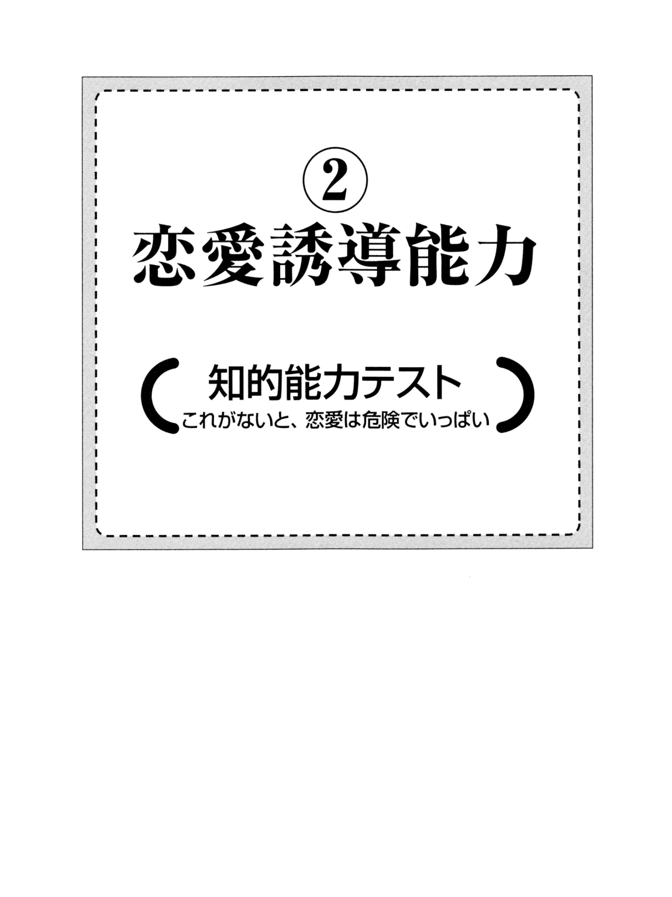
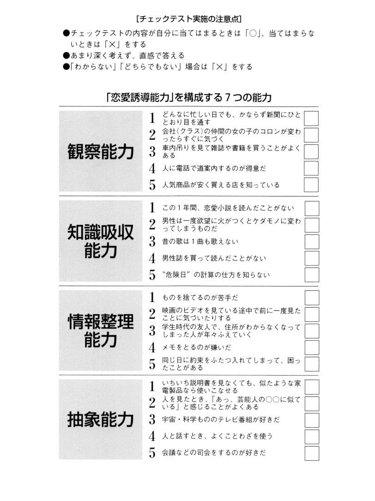
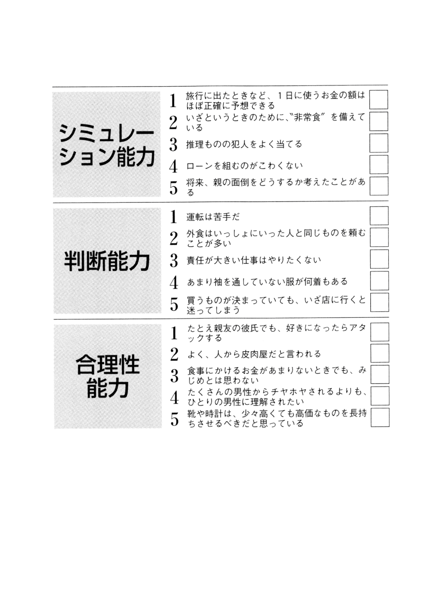
恋愛誘導能力のみがき方（２） 観察能力
洋服、髪型......相手のちょっとした変化のデータをインプット！
「好きな男性が身近にいるのに、話しかけるきっかけがつかめない」「彼とつきあいはじめたのに、話題がなくて気まずい思いをしている......」。こんな相談を若い女性からうけることがありますが、彼女たちと話をしていてひとつ気づいたのは、「観察能力」に問題があるということです。
たとえば、ためしに「その男性の趣味は？」とか、「散髪をしてデートにきたことがありますか」などと逆に質問をぶつけてみると、いずれもうまく答えられないのです。そんなことどうでもいいのでは？ と思われる方もいるでしょうが、こうした「観察能力」がなければ彼との話題づくりもできないし、自分の気持ちを伝えるタイミングもはかれないのです。「観察能力」は、二人の距離を縮めながら、恋愛の〝方向〟を定めていくために欠かせない能力なのです。
男性は女性に比べると自分の髪型や服装にあまり気を遣いません。その分、無意識のうちに正直な心理状態が外形に反映するものです。仕事が忙しいときには、毎日はいている靴が同じだったり、逆に仕事が一段落して心にゆとりができると髪を切ってみたり、といった具合です。ネクタイの色や柄が急に変わったら、何かあったと考えてよいでしょう。
そんなちょっとした変化を話のネタに、「最近どう？」と話をふってみるのも、二人のあいだの距離をスムーズに縮めるきっかけになります。もちろんそのためには、日ごろから彼のことを観察していなければできないことです。
「観察能力」の〝根っこ〟にあるのは、いかに自分の知りたいものに近づく努力をしているか、ということです。彼のことをもっと知りたい、もっと近づきたいと思うならば、当然彼のことをよく観察しなければなりませんし、自分の興味のあるものに対しては、もっとよく見てやろうと思うのもまた当然のことなのです。
こうした姿勢そのものが「観察能力」を伸ばしていくことになります。チェックテストの五つの項目は、いずれも、日常の「知りたいものに近づく努力」を見ようとしたものですが、これは仕事でも対人関係でも欠かせない要素のひとつであるのです。
言うまでもなく、恋愛関係を深めるためには、お互いが理解しあう必要があります。１章でお話ししたように、そこでは恋愛を正しい方向に〝誘導〟させる「知的能力」が、大きな役割を演じます。その要素のひとつとしての「観察能力」は「知的能力」の〝土台〟になると言ってもいいでしょう。この節では「知的能力」をどう伸ばすかという問題について、いっしょに考えていきましょう。
恋愛誘導能力のみがき方（２） 知識吸収能力
「相手のことが何もわからない」では、怠 慢 と言われても仕方がありません
「男ってよくわからない」とは、女性がしばしば口にするセリフです。しかし考えてみれば女性が男性のことをわからないのは当然のことなのです。女性と男性とは、生理的にもちがった生き物で、最近の研究でも、男女の脳の構造は微妙にちがうことが明らかにされています。
なまじ母性愛を気取って、「わたしは男の人のこと何でもわかるの」という態度をとるよりも、「男性は不可解なもの」という立場をとったほうが、じつはいいのです。そこからもっと男性のことを知ろうとする努力が生まれ、そうすることで、いっそう彼との仲も深まっていくのです。
ところが「男なんてわからない」ですべて片づけてしまい、男性のことにまったく無知な女性がけっこういることには、すこし驚かされます。これでは、怠 慢 と言われても仕方がないでしょう。たとえば、性行動の面でも男性と女性はちがいます。ベッドの上でオルガスムをむかえたあと、女性は比較的長い時間快感の余 韻 にひたったまま夢見心地でいるのですが、男性の快感は急速に冷め、現実的な感覚に引き戻されてしまいます。
こうした回復の早さは身を守るための動物的な本能の名 残 なのです。こういうちがいを知らないと、セックスの直後にテレビのニュースを見たり、冷蔵庫からビールを出してきたりする彼を見て「私をほんとうに愛してないんじゃないか」と疑ったり、「無神経ね！」と怒ったりということになりかねません。
相手がいまどんな気持ちでいるのか、どんな健康状態で、どんなことをしてあげれば喜んでくれるのか......。こうした基本的な思いやりをもって彼を〝誘導〟していかなければ、二人のあいだの距離はいつまでたっても縮まらないでしょう。
男性のことを「わからない」で片づけてしまうのではなく、わかろうとする努力を惜しまないことが、恋愛で必要な「知識吸収能力」なのです。
男性誌を読むのでも、彼の好きな曲を聴いてみることでもいい。こんな、男性のことを知るためのちょっとした努力が、恋愛に必要な「知的能力」を知らず知らずのうちにみがいていくことにもつながっていくのです。
もちろん、男性に限らず仕事でも自分の趣味でも、わからないものを知ろうとする努力を惜しまないことがたいせつです。
〝恋愛誘導能力〟を生み出す「知的能力」とは、あなたの生き方に関わるすべての領域での〝ちょっとした努力〟が土台となっているからです。
恋愛誘導能力のみがき方（２） 情報整理能力
〝連想ゲーム方式〟で、彼氏に関する情報を〝恋愛作戦〟に役立てましょう
恋人になれればと思っている男性がいたり、現在つきあっているけれどもっと親密になりたいという男性がいれば、彼のことをすこしでも多く知りたいと考えるのは当然です。自分にとって恋愛対象となる男性の情報を収集するのは、その恋愛を成就させるための第一歩です。雑誌や情報誌などからいくら多くの情報を集めても、その情報と彼が結びつかなければ、それは単なる〝クズ情報〟でしかありません。
そこで、集めた情報から彼に結びつくものを整理し、組み立て、生かしていく「情報整理能力」が必要になってくるのです。
たとえば彼に贈るプレゼントを選ぶときにも、この「情報整理能力」がものを言います。彼のごひいきのサッカーチームを知っていれば、チームカラーのシャツをプレゼントしておそろいで着るなんて高等テクニックも夢ではありません。
友人からのプレゼントをその金額で評価してしまうような物質主義的な女性が、まだまだいるようです。そんな女性にかぎって「何がほしいの」などとぶしつけに聞いてしまうのです。きびしい言い方になりますが、相手の「ほしいもの」がわからないようならば、恋愛をする資格はないと、私は考えています。そして、相手のほしいものを見つけるために必要なのが「情報整理能力」であるとも言えるのです。
情報を生かすということは、一種〝連想ゲーム〟に近いでしょう。つまり、ばらばらにインプットされている情報を、ある目的のためにつなげていく過程なのです。たとえば彼が秋田県出身とします。あるとき街を歩いていたら秋田料理の店がありました。彼に関するこのふたつの情報を結びつければ、今度の食事では彼にこの店を提案しよう、という発想が自然に生まれるはずです。
情報誌だけに頼って、トレンディーなお店をなぞっているだけでは、永遠に彼の「ほしいもの」など見つかるはずがなく、彼にすぐに飽きられてしまうでしょう。
「情報整理能力」をみがく方法としては、〝ブリーフィング訓練〟をおすすめします。何かを体験したときに、それをできるだけ短い話にまとめるのです。「短く」という条件のもとに話をまとめるには、どこがおもしろいのか、どんな情報を伝えたいのかということをよく整理して考えなくてはなりません。すると情報には生かす情報と捨てる情報の二種類があることがわかるのです。「恋愛誘導能力［情報整理能力］テスト」のチェック項目１は、情報を捨てる能力を問うものなのです。情報を捨てながら、情報同士を結びつけることを心がければ、あなたの「情報整理能力」はぐんぐんアップしていくことでしょう。
恋愛誘導能力のみがき方（２） 抽象能力
ふられた理由を「相手が悪い」と考えていては、同じ失敗をくり返すだけ
好きな男性になかなか思いが通じないときや、二人の関係がうまくいっていないときに、「ワタシとは合わないタイプだったんだわ」とか「相手が悪いのよ」などと、ヤケになったことはないでしょうか。うまくいかない原因を自分以外の他者に求めようとすることを、心理学では「合理化」と言います。
これは、自分自身を守るための心理的なメカニズムですが、いつも他人のせいにしていると、やがて自分自身まで見失ってしまう恐れがあります。
恋愛には失敗はつきものです。デートのちょっとした失敗からはじまって、愛の告白の失敗、そして失恋も失敗のひとつです。失敗を恐れることはありません。しかし失敗をしたら、その原因を自分なりに分析しておかないと、また同じ間違いをくり返すだけなのです。それを、いつも相手にその責任があると「合理化」ばかりしていれば、「自分はいつも正しい。なのにまわりが自分をわかってくれない」というその幼児性ゆえに、まわりから相手にされなくなるでしょう。
失敗を乗りこえ、そこから成功をつかむには、「抽象能力」が必要です。なにやらむずかしそうな能力に聞こえるかもしれませんが、そんなことはないのです。たとえば、職場の上司の機嫌がいいか悪いかは、いっしょに仕事をしていればだいたい判断できるはずです。上司によってはタバコの量が多くなったり、貧乏ゆすりがひどくなったり、という〝症状〟を見てそれを判断できます。つまり経験によって、「タバコがふえる」→「機嫌が悪い」ということが〝法則化〟されるのです。これを称して「抽象能力」と言うのです。
もし、よく彼をイライラさせてしまう人なら、どんなときに彼がイライラしてしまうのかを、まず考えてみるのです。ある若い女性にこの〝能力〟のことを話したら、「そういえば、食事や遊びに行く場所の希望を聞かれても、相手まかせでぐずぐずしていたときに、彼はイラ立っていました」と、見事な分析をしてみせました。
「抽象能力」をみがくには、これもふだんのちょっとした心がけで可能なのです。ものごとの共通性を見つけ、それが起こった原因を考えてみる、という習慣をつければいいのです。具体的には、「恋愛誘導能力［抽象能力］テスト」のチェック項目２の「そっくりさん探し」もいい訓練です。「抽象能力」がないと顔の部分しか見ないので、似ている人を探し出せないのです。また、プレゼント用の洋服は絶対に雑誌のマニュアルに頼らないと決めてみるのもいいでしょう。そうすれば、必然的に自分の頭で考えます。彼をよく観察し、「彼の好み」を〝法則化〟するのです。これは、「抽象能力」を実戦で鍛える方法です。
恋愛誘導能力のみがき方（２） シミュレーション能力
いきあたりばったりのデートは、恋愛トラブルのもとになります
「シミュレーション能力」というと、どうもＳＦ的な空想力がすべてだと思っている人が少なくないようです。しかし、シミュレーションとは、さまざまな根拠にもとづいて、論理的に未来を予測する「知的能力」のひとつなのです。当然のことながら、仕事では絶対に必要な能力です。
たとえば、セールスでも、相手がどう出てくるかをつねに予測し、相手の出方を読みながら、今度は自分がどう説得すればいいかを用意します。当然相手もシミュレーションしているわけですから、これは「どちらの読みが勝つか」という戦いになるのです。そこでは、確かな根拠にもとづいて、論理的に予測できたほうが勝つのです。
これは、恋愛を〝誘導〟していくうえでもまったく同じです。恋愛にはさまざまなトラブルがつきものです。いくら順調なカップルでも、いつどんなトラブルに遭 遇 するかはわかりません。しかしきちんと頭を働かせれば、そのトラブルをある程度予測して未然に防ぐことができるのです。
たとえば、七時にデートの待ち合わせをしたのですが、仕事のトラブルで得意先に行かなければならなくなりました。仕事を終えてかけつけても、一時間待たせてしまうことになります。かといって、携帯はＯＦＦにしておかなければいけないので彼からは連絡がつけられません。まあ一時間待たせても、にっこり笑ってあやまればいいかな、と思う前に、ちょっと彼の性格を考えてみるのです。
「時間を有効に使う人だからメールを入れておけばその時間、ネットカフェに行けるハズ」くらいの頭は働くはずでしょう。こんなちょっとしたことでも、立派な「シミュレーション能力」なのです。同じ時間に遅れるにしても、あなたの仕事に対する強い責任感と、彼に対する誠意は、十分に伝えられるはずです。
「シミュレーション能力」は、もちろん恋愛のトラブル解決だけに役立つものではありません。デートコースの設定にも威力を発揮しますし、愛の告白のタイミングをはかるにも、欠かせない能力です。この「シミュレーション能力」は、ふだんから「もし――だったら......だろう」と考える、〝イフ・ゼンの思考回路〟を身につけることでみがかれます。また、彼といっしょにビデオやテレビドラマなどを見ながら、その後の展開の予測をして遊んだり、彼とシミュレーションの勝負をして、負けたらおごるなど、賭 けをしてもいいでしょう。
どうせなら、楽しみながら「シミュレーション能力」をつけてしまうのです。
恋愛誘導能力のみがき方（２） 判断能力
長くつきあっているのに、いまだにキスができない理由とは？
現代社会は自動販売機やコンビニなどの便利なシステムにあふれています。環境が便利でラクなものになればなるほど、私たちは自分の頭で判断しなくてもすむようになり、ついつい「あなたまかせ」になりがちです。べつに自分でメニューを組み立てなくても、何となくぶらりとファーストフードのお店に入れば、いっのまにか食べるものが決まってしまいます。選択肢はすべてお店の側が出してくれるわけで、それに「イエス」「ノー」と反応するだけなら、たいした判断能力はいりません。
こうした受身的な態度をそのまま恋愛に持ちこむ困った人が特に女性に増えているようです。男性に頼りきりの女性のほうがかわいい、という昔からの誤解も原因のひとつでしょう。デートの行き先も食事の種類もすべて彼まかせ。ついでにキスのタイミングもベッドへの誘惑もみんな彼のペース。自分は彼の出してくる選択肢に「イエス」「ノー」を言うだけ。これではだれが恋愛の主人公なのかわかりません。
主体的に自分自身が恋愛の主人公になるためには「判断能力」が大切です。「恋愛誘導能力［判断能力］テスト」のチェック項目１に「運転が苦手」というのがありますが、運転の上手下手は、テクニックよりも「判断能力」に負う部分が大きいのです。車線変更が苦手、高速にはいるのが恐いという人は、おおむねこの「判断能力」に難があると考えていいでしょう。
恋愛とは〝判断の連続〟です。はじめて声をかける、はじめてデートに誘う、はじめてキスをする、愛の告白をする......。すべてお互いの「判断能力」が大きなウェイトを占めます。たとえばキスをするにも、お互いのタイミングが非常に重要です。これまでお話ししてきた「観察能力」や「情報整理能力」「シミュレーション能力」などをフル動員させれば、いまキスをすべきときかそうでないのかは、判断できるはずです。
彼・彼女の気持ちを１００パーセント推しはかれないといって、判断を放棄するようでは、その頼りなさに愛想をつかされるのがオチでしょう。多少〝見切り発車〟でもいいでしょう。男も女も、案外このような総合的な「知的能力」を、〝頼れる人〟かどうかをはかる基準にしているものなのです。
「判断能力」をつけるには、人の意見などを聞くまえに、自分はこう思うということをアピールしてみるといいでしょう。そして決めたら即実行を心がけるのです。買物でも、決めたら迷わず買う。その判断が間違っていれば、それはそれでいい。そこから新たな情報がインプットされ、つぎにはもっと的確な判断ができるようになるものです。こうした積み重ねで「判断能力」は高まっていくのです。
恋愛誘導能力のみがき方（２） 合理性能力
ときには「やさしい女」でなく、「クールな女」になって彼を誘ってみましょう
「やさしい人」は、つねに求める異性像の上位にランキングされる条件ですが、やさしいだけでは、これまた異性の心をしっかりとつかむことはできません。たとえば、「誕生日には、一日中、君とベッドインしたい」「週末には、かならず、キミの手料理が食べたい」「夜寝る前には、かならず電話をかけて」という相手のかぎりない欲望を、すべて満たしたとしましょう。それで、「彼氏・彼女」の座は揺るぎないものになるかと思ったら、じつは大間違いなのです。
恋愛には、ときには恋の盛り上がりを抑え、客観的に相手と二人の状況を判断できる能力が必要になります。ここでいう「合理性能力」とは、暴走しがちな「恋愛推進能力」にブレーキをかけ、恋愛の〝進路〟を正しい方向に向ける〝舵取り〟の役割を果たすものです。ときとしてクールな非情さを要求することもあります。
たとえば「恋愛誘導能力［合理性能力］テスト」のチェック項目１の「親友の彼でもアタックする」にしても、「自分が彼を好きになったことと、それが親友の彼であることは、論理的に関係ない」という〝割りきり〟から出てくるものです。
また、子どもがほしがるものを親がすべて買って与えていたらどうなるでしょう。どんなにかわいい自分の子どもでも、ときにはひっぱたいてでも我 慢 させる〝割りきり〟が必要なのです。そうした〝割りきり〟をさせるのが、対象を客観的に見る能力なのです。
同様に、医者は自分の肉親を手術することができないといいます。情が移り過ぎて、冷静にしかも客観的に判断することができなくなるからだそうです。
恋愛もこれと同じです。相手にのめりこみ過ぎて、客観的な視点を失うと、二人の関係を正しい方向に導けなくなるのです。
男性、女性とも、現実をしっかりと把握し、目的のために感情を排して合理的にものごとを考える「合理性能力」に、人間としての頼もしさや信頼性を見ているのです。何でも自分の願いをかなえてくれるサンタクロースのような男や、都合のいい女では、いつか愛想をつかされても仕方がないでしょう。
「合理性能力」をみがいていくには、「感情をまじえずに物事を見る目」をつねに心がけるといいでしょう。これはむずかしいことではなく、たとえば、ドラマを見るときでもできるのです。登場人物に感情移入をしないで、筋書きのバカバカしさ、現実性のなさを見つけてみたり、また男性の好きなハードボイルド小説などを読んでみるのもいいでしょう。目的を達成するための非情なまでの「合理性能力」を学べるでしょう。
恋愛能力は、日々の実践でみがこう３
こうすれば、｢恋愛誘導能力｣がアップ！【まとめと対策】
●どんなに忙しくても、興味のある新聞記事は最後まで読む。街に出たら、おもしろいものをひとつは見つけて話ができるようにする。......【観察能力】
●ふだん買わない男性誌を買って読んでみる。男性の性欲や性的行動の特徴について正しい知識を知る。......【知識吸収能力】
●おもしろい体験を、短い話にまとめて話す訓練をする。彼へのプレゼントは、直接彼に聞かずに自分の頭で考える。......【情報整理能力】
●身近な人から芸能人の〝そっくりさん〟を探してみる。マニュアルや情報誌に頼らないデートを提案する。......【抽象能力】
●テレビドラマや映画を、その後の展開を予想しながら見る。ふだんから、「もし......だったら」と考えるクセをつける。......【シミュレーション能力】
●買物をするときは、最初の判断を信じて迷わず買うクセをつける。レストランでは、人と同じものを頼まないようにしてみる。......【判断能力】
●ドラマを見るときに、感情移入をせず、筋書きのバカバカしさを指摘してみる。ハードボイルドの小説などを読んでみる。......【合理性能力】
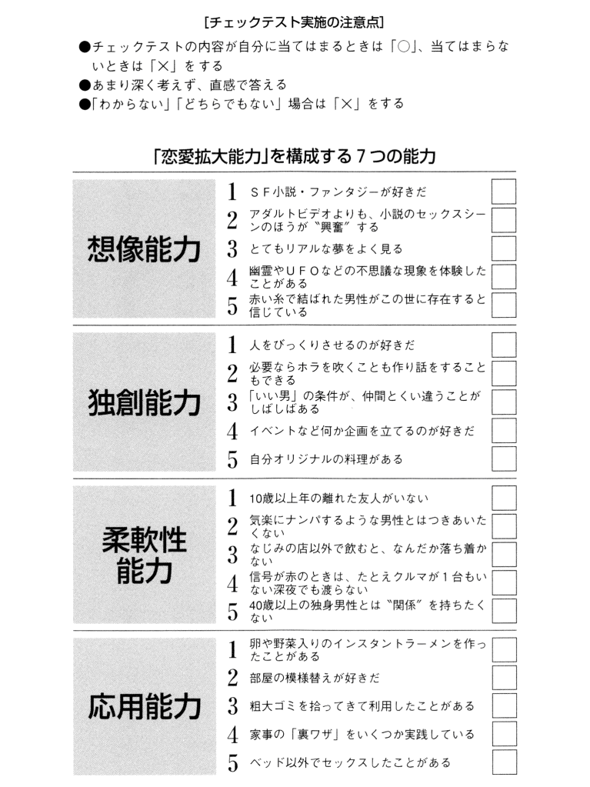
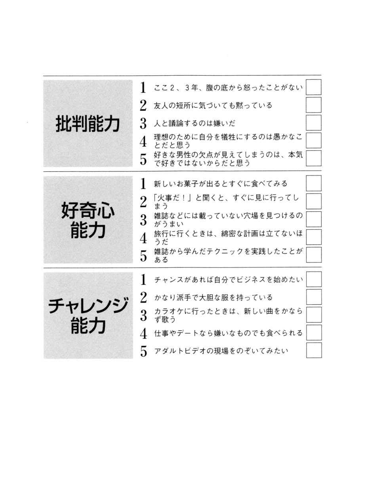
恋愛拡大能力のみがき方（３） 想像能力
自分の「夢」をたいせつにする女性は神秘的な魅力を発散します
「恋愛は幻想である」と、心理学者の岸田秀氏が『ものぐさ精神分析』という本のなかで語っています。氏の言葉を借りれば、「それ自体としてはたいした値打ちのない材木を彫り上げて、芸術作品としての彫像を創り上げていく」のが恋愛ということになります。〝芸術作品〟をつくるために必要な〝能力〟こそが、「創造能力」であり、この〝能力〟が恋愛をふくらませ、拡大していくために大きな役割を果たすのです。この節では「創造能力」を構成する要素のひとつ、同じ発音の「想像能力」からはじめていきましょう。
イマジネーション＝「想像能力」は現実を動かす力となります。仕事でもこの〝能力〟は当然必要です。ひとり寝の青年技術者が、こんなものがあったらなあ、と考え出したのが布団乾燥機だったり、八百屋のオッサンが使えるような簡単な計算機がつくれないか、という発想から電卓が誕生したのも、「想像能力」のたまものです。
恋愛でも、二人でいっしょに見ることのできる「夢」が必要です。いくら容姿がよくて性格がよくても、「夢」を捨てた女性はどこかすさんだ雰囲気をかもし出し、フレッシュな魅力に欠けてしまいます。「このコといっしょにいると楽しいし、自分の世界も広がってくるなぁ」と感じさせるのが「想像能力」なのです。
友人の結婚式で隣り合わせになった女性とつきあいはじめた男性がいます。東京ではもうマイホームなんて絶対買えないという世間話になったとき、彼女が「わたしは一生借家暮らしでもいいの。でも一年に一カ月は無人島で過ごしたい。そのぶんお金をためて無人島を買うの」と、ニコニコして話したそうです。彼は、このひと言でまいってしまいました。それが実現可能かどうかはともかく、現実主義者が多い女性のなかで、彼女の「夢」は痛快だったというのです。
現実を直視することはたいせつなことですが、それは「夢」を持てないことの理由にはなりません。女性も男性も、現実を忘れさせてくれるほどの「想像能力」を持つ人間が不思議な魅力を発揮するのです。
この「想像能力」はだれでも持っています。ただそれを縛りつけている現実から、なかなか自由になれないだけのことなのです。たとえば、ＳＦ小説に没頭してみるのもいいし、一人旅をして、日常からちょっと離れてみるのもいいでしょう。自分を束縛しているものから離れたとき、本来持っている「想像能力」がふくらみ、現実を変えるほどの力を持ちはじめるにちがいないでしょう。
恋愛拡大能力のみがき方（３） 独創能力
〝発想〟の豊かな女性こそが、ほんとうに「おもしろい」
男性と同じように「おもしろい」「ユニークな」女性は人気者で、当然のようにモテます。ただし、誤解してほしくないのですが、モノマネやギャグで笑わせたり、口が達者なことを称して〝おもしろい〟と言っているわけではありません。無口でも口下手でも、モテる女はたくさんいます。それは、その女性がほんとうの意味で「おもしろい」からです。
男性が求めている「おもしろさ」とは、要するに「独創能力」のことです。どこかで覚えたギャグやモノマネで笑わせることと、この「独創能力」とは、なんの関係もありません。それどころか、こうしたことで彼をひきつけることができるなどと思うこと自体、「独創能力」の低さを証明しているようなものです。では、ここでいう「独創能力」とはどういうものでしょう。
私の知人の若い女性はなかなかの合理主義者で、パーティーなどに出かけるときのドレスは、いつも借り着で間に合わせています。ところがあるとき、後輩の結婚式をコロリと忘れていました。気がついたのは当日の朝。そこで独創力豊かな彼女はお葬式用の喪 服 をひっぱりだし、黒のスカートに白い絹のブラウスを組み合わせ、ゴールドのチェーンをワンポイントにそれらしい小物をあしらって、平気な顔で会場に向かいました。
もともとお祝いごとであれ、その逆であれ、セレモニー用の服装はどこか似かよっているものなのです。こんな彼女の装いは、「清楚」「趣味がいい」「品がある」などと好評で、モテモテだったようです。
「独創能力」のみがかれた人は、総じて意中の男性に対して、手を変え品を変え、無理をせずアタックできます。ついでにマンネリをも打破できます。相手の興味がつきないような、新しい行動のレパートリーをいつも持っているのです。この「独創能力」を養うために、ある心理学者が行なったつぎの調査が参考になるでしょう。
独創力の豊かな人とふつうの人に〝意味のない模様〟を見せたとき、ふつうの人は「しみ」や「黒い雲」にしか見えないのに、独創力の豊かな人は「磁化した鉄粉」「母親と子どもが雨が降るまえに家路を急ぐところ」など、ふつうの人が考えもつかないようなものに見立てる傾向があるそうです。
つまり「独創能力」をみがくには、いかに常識や先入観に縛られずに発想できるか、ということにつきるとも言えるでしょう。一週間３０００円だけで暮らしてみるとか、お金をまったく使わないデートをしてみるなど、いろいろとチャレンジしてみてください。くだらないと思っていては、「独創能力」はみがかれません。
恋愛拡大能力のみがき方（３） 柔軟性能力
デート中のハプニングこそ、自分をアピールする絶好のチャンス
ウソみたいなほんとうの話があります。彼女のロングヘアがいい、と思っていたある男性が、彼女があるとき気分を変えるためにショートカットにしたとたん、それだけで嫌いになってしまったというのです。「オレの彼女はこうでなければならない」というこだわりが強すぎたとしか、私には考えられないのですが、そこまで極端でないにしても、こうした柔軟性のない男性、そして女性もけっこういるようです。柔軟性もひとつの能力で、ここでは「柔軟性能力」と呼ぶことにします。
「柔軟性能力」を心理学的に考えると、「外界や自分に起きた変化に対する適応力」と言いかえることもできるでしょう。
トフラーという社会学者が、『未来の衝撃』という本のなかで、遠い未来の出来事として予測していたことが、どんどん現実に起きてくると、人間はどう対応していいのかわからずにストレスが高まり、一種のパニック状態になるといっています。チンパンジーの実験で、飼育係がいつもと違うジャンパーを着て近寄るとある種の敵意を示した、というものがありますが、さきほどの男性も、このチンパンジーとほぼ同じレベルのようです。
自分で予測できないことが、つぎつぎと起こるのが恋愛です。だからこそ恋愛はおもしろいのだし、スリリングなのです。そのひとつひとつにパニックを起こしていたら、恋愛は広がっていくどころか縮んでしまうでしょう。
たとえば彼が探してくれたレストランが、いざデートの日にその店に行ったら臨時休業だった、という場合にも「柔軟性能力」は求められます。ここで彼といっしょになって落ち込んで、早々にデートを切り上げてしまうようでは、情けない話です。
「柔軟性能力」をみがくのは、それほどむずかしいことではありません。要は、自分にとって新しいものを見つけて、積極的にそれに接するようにすることです。たとえば、会社などでもふだん話したことのないような年の離れた上司や先輩と話をしてみるのもいいでしょう。逆に、小学生といっしょに遊んだりするのでもいいかもしれません。
自分の予想していなかった話題や発想に触れることで、自分の〝思い込み〟がときほぐれます。こういうことの積み重ねが「柔軟性能力」を伸ばすためのきっかけになりやすいのです。
「柔軟性能力」は、人間が生きていくために必要な〝能力〟であり、もっといえば人生を豊かなものにするための〝能力〟でもあります。その意味では恋愛も人生も同じなのです。
恋愛拡大能力のみがき方（３） 応用能力
彼にお金を使わせない〝２０００円デート〟。それでもあなたは楽しめますか
近年の不景気にもかかわらず、デートの場所もプレゼントも、高値安定のままで、相変わらず若い男性の経済状態は苦しいようです。
新聞には価格破壊などという文字が踊っていますが、一見安いように見えるファーストフードでも、あれこれと注文していくうちに、あっという間に１０００円札が消えてしまいます。雑誌で紹介されているお店などに行こうものなら、いつの間にかお給料の何分の一かがなくなり、これ以上電話料金が増えないように「なるべくメールのやりとりですませようね」なんて話になりかねません。
たまたま彼がふつうよりもリッチで、いまどきバブリーな〝高級路線〟を目指したところで、それが日常になってしまえばマンネリが訪れるのは道理です。そのマンネリを打破するためには、さらなる〝高級化〟を目指すしかないわけで、いくら彼の稼ぎがよくても、近い将来に破 綻 が起こるのは目に見えています。
こうした時代の変化のなかで、お金の稼ぎ高で男性の価値を決めるといった「金権体質」の女性はさすがに影をひそめる昨今ですが、それでも正直、もっとお金がほしいと思うのが多くの女性の本音でしょう。
ところが、ちょっと見で〝金力〟がありそうに見える男性でも「一寸先は闇」。そういう女性自身の側だって、いつリストラの対象にされるかわかったものではありません。〝金力〟はあてにならないのです。では、〝金力〟でなければ何か。それは「応用能力」なのです。
たとえば高校生のころ、あなたはどんなデートをしていたでしょう。お小遣いだって少なかったのに、高級なお店とかも知らなかったのに、それでも楽しかったのではありませんか？ 高校時代のデートをベースにいまの大人の頭でプラスアルファの工夫をすれば、けっこうユニークなデートができるはずです。自分のこれまでの知識と経験を総動員して、つねに新しいスタイルの〝二人の時間〟を探究するのです。
また、同じようなデートは二回つづけないと決めたり、デート資金を２０００円と決めて実行するのでもいいでしょう。この〝２０００円デート〟を実行した若者の報告によると、近くの川に弁当をもって行き、ボートに乗ったりフリスビーをして遊んだりして、二人とも大喜びだったそうです。あしたのデートは、サイフに２０００円だけ入れていざ出発しましょう。
恋愛拡大能力のみがき方（３） 批判能力
彼氏の欠点が目につくようになったら、二人の関係が深まった証拠
ある若い女性からこんな相談を受けたことがあります。最近、何かにつけて彼の欠点が目につくようになったというのです。そしてそれを彼に言ったほうがいいのか、それともいままで見えなかった欠点が見えてしまうというのは、もう二人はダメだということなのか、という内容でした。
私はこう答えました。「アバタはアバタなんだよ」と。恋愛初期にアバタもエクボに見えるのは当然で、すこしたてば、アバタ、つまり欠点が欠点として見えてくるのも当たりまえなのです。「もし今後も彼とうまくやっていきたいのなら、いつかうまいチャンスを見つけて思いきって言ってしまったほうがいい。そうすればもっとうまくいくでしょう。そういうことに気がついて悩むというのは、恋愛能力が高い証拠だからがんばれ」と励ましました。
この場合の恋愛能力とは「批判能力」のことで、「問題を発見する能力」と言ってもいいでしょう。恋愛のはじまりは、そもそも〝赤の他人〟同士の人間性のぶつかり合いです。ごく初期はともかく、やがて問題が出てくるのも当然です。そしてその問題を見つけ出し、クリアできたときに、間違いなく二人の関係はより深くなり、恋愛はいっそう広がっていくのです。
会社の組織や人事、仕事に対して不満を持たない人間は、けっしていい仕事はできません。ここがおかしい、こうすればもっと仕事がうまくいくのにという「批判能力」がないと、与えられた仕事をこなすだけの〝マシーン〟と変わりません。恋愛も同じで、「批判能力」がなければ、関係は進展しないのです。
二人の信頼関係はいろいろな試練を乗り越えることで、ますます深まります。しっかりしている男性なら、そのへんのことはわかっていますから、たとえ欠点のことを指摘されても、かならず理解してもらえます。もちろんそのときはケンカになるかもしれませんが、ケンカのあとは、いっそう深くわかりあえる仲になっているはずです。そんなケンカで別れるようなら、それだけの男性だと思っていいでしょう。
「恋愛拡大能力［批判能力］テスト」のチェック項目１にある「最近怒ったことがない」という〝症状〟が出ている人は、「批判能力」の〝危険信号〟と思ってください。逆に言えば、怒りたいときに自分を抑えず、腹の底から怒ってみることは、「批判能力」の向上につながります。怒りは、論理では引き出せないような問題の本質を、直接的にえぐり出す「創造能力」に近いものを持っているのです。
恋愛拡大能力のみがき方（３） 好奇心能力
「なんでもおもしろがれる」のも、恋愛には欠かせない〝能力〟
サルを個室に入れ、となりの部屋でオモチャの電気機関車を走らせるという実験があります。サルは窓から何度もとなりの部屋をのぞきます。この際、見たらほめるとか、エサを与えるということは何もしませんから、サルはただ単に「見る」ためだけに何度も何度も窓を開けます。このように、めずらしいものを楽しみたいという欲求は、高等動物の本能とも言えるものなのです。
最近の若者は保守化傾向にあると言われますが、私の言葉では「好奇心能力」が弱くなっていると言うことができます。慣れ親しんだものや環境を好み、そこから外へ出たくない。新しいものは試してみなくても、もうわかっているというような顔をしています。
わかった〝つもり〟になってしまうため、それ以上ものごとを深く探究しようという気が起こらないのです。
本来、「好奇心能力」は、若者の特権です。これを失ってしまうと、もう世の中おもしろいことはなくなってしまいます。そこまでいかなくても、最近彼とのデートがおもしろくない、マンネリだ、と感じている人がいるのならば、その原因に「好奇心能力」の衰えがあるのではと疑ったほうがいいでしょう。もうひとつ、彼から「オバサンっぽい」と言われたことはないでしょうか。
恋愛を楽しく、おもしろく、スリリングなものにできるかは、この「好奇心能力」にかかっています。一見ばかげたことをおもしろがれるのも、ひとつの〝能力〟です。たとえば〝電車でデート〟と称して、まだ乗ったことのない電車で知らない街に行くデートを敢 行 するのもおもしろいかもしれません。〝おもしろがれる題材〟はその気になればいくらでも見つけられるものです。
「好奇心能力」を閉じ込めてしまうのは、経験する前から「わかったつもり」になってしまうことです。ですからこれをみがくには、とにかく経験してみることがたいせつです。これは日常の生活で、いくらでも実行可能です。
また、仕事先に行くのでも学校に行くのでも、ふだんとまったくちがう道順を通ってみるのです。仕事でも、それまで引き継がれてきた方法より、もっと速い方法を考え出して変えてみるとか、夜型を朝型に変え、散歩してみるなど、いくらでも新しいものに出くわすチャンスはつくれます。旅行会社のパック旅行ではなく、いきあたりバッタリに旅行してみるのもいいでしょう。一度でも楽しいことがあれば、「好奇心能力」は意識しなくても自然に高まってきます。
恋愛拡大能力のみがき方（３） チャレンジ能力
〝チャレンジ精神〟を秘めた女性は美しく輝く
知人の会社での話ですが、職場一のハンサムで通っていた男性が、10 歳年上の36 歳の女性社員と結婚することになり、まわりはびっくり仰 天 したといいます。予想もされなかったカップルだったからで、「あの人になら勝つ自信があったのに」などと本気でくやしがった女性社員が何人もいたということです。そのなれそめは、披露宴の新郎の親友のスピーチで明らかにされました。
それによると、彼は、彼女の強烈な〝チャレンジ精神〟にほれてしまったのだというのです。彼は毎週、気晴らしに会社の近くのスイミングクラブに通うことにしたのですが、そこで彼女の姿を見つけたのです。彼女はスタッフのコーチの指示を受けながら、いつも二時間たっぷり「なんでこんなに猛練習をするのだろう」と思うほど、泳ぎまくっているのです。それでいて、つぎの日も平然と仕事をこなします。興味をもった彼は、ある日泳ぎ終わったあとに聞いてみました。すると、六カ月後に開かれる県の水泳大会を目標にしているというのです。彼はその大会を見に行きました。堂々三位にはいり、彼は震 えがくるほど感動したといいます。そこから、本格的な交際がはじまったのです。
男性であれ女性であれ〝チャレンジ精神〟にあふれる人は魅力的です。動物は強い子孫を残すために、本能的に強いＤＮＡを求めるようにプログラミングされています。「チャレンジ能力」は、まさに〝強さ〟の証明として、異性を強くひきつけるのです。
アメリカのマズローという学者が、基本的な欲求が満たされたとき、より高度な欲求が意識されるようになると言っていますが、こうしてみると、人間は欲につき動かされて、いつでも「チャレンジ能力」を発揮しながら生きている動物であることが、よくわかるでしょう。
「チャレンジ能力」は、ある程度の見通しと自信がないと、なかなか発揮できません。そこで、自信をすこしずつつけていく方法をとるといいでしょう。つまり、成果がはっきり見えるもので成功体験を積むのです。ダイエットや禁煙を成しとげてみる、あるいは英検何級といった資格を取るのでもいいでしょう。スキューバダイビングをはじめるのもいいでしょう。まず小さなことでいいですから、自分なりに目標を持って挑戦し、そこで成功した自信が、つぎの大きな挑戦へつながっていくのです。
こうしてすこしずつ成功体験を積み重ねていくことが、「チャレンジ能力」をみがくうまい方法です。
恋愛能力は、日々の実践でみがこう４
こうすれば、｢恋愛拡大能力｣がアップ！【まとめと対策】
●ＳＦ小説などに没頭してみる。一人旅をして、日常の自分から離れてみる。アダルトビデオを見るより、官能小説を読んでみる。......【想像能力】
●一週間を、たとえば３０００円で暮らせるかどうか試してみる。洋服をいろいろアレンジして着てみる。部屋の模様替えをしてみる。......【独創能力】
●ふだん話したことのない年上の先輩や上司と話をする。ときには、小学生といっしょに遊んでみる。......【柔軟性能力】
●同じパターンのデートは、二回以上つづけないように努力する。２０００円だけしか使わないデートを実行してみる。......【応用能力】
●腹が立ったときは、自分を抑えずに心の底から怒ってみる。彼や友人の欠点に気づいたら、ためらわずに言ってみる。......【批判能力】
●会社や学校に行くコースを、ふだんと変えてみる。まったく予定を立てない旅行をしてみる。朝早く起きて散歩してみる。......【好奇心能力】
●〝一週間間食厳禁〟など、まず、自分でもできそうな小さな目標を成しとげる。新しいスポーツや資格取得に挑戦してみる。......【チャレンジ能力】
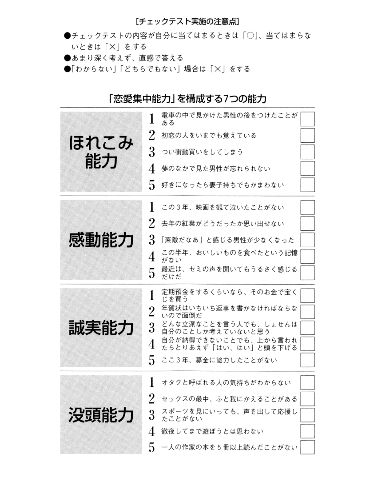
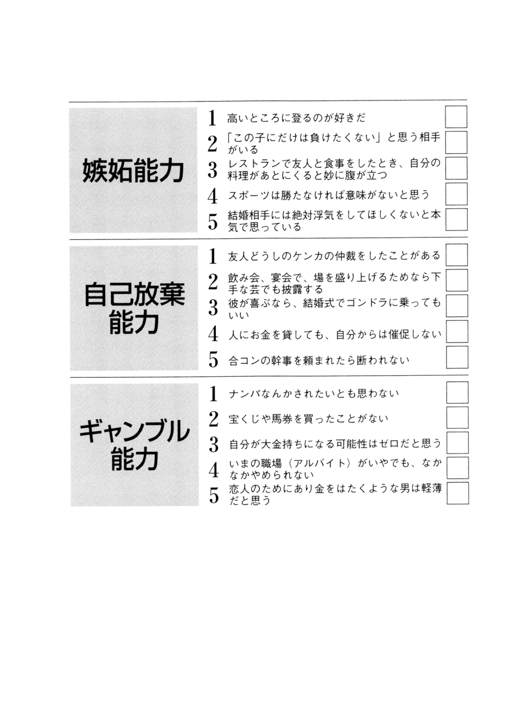
恋愛集中能力のみがき方（４） ほれこみ能力
〝理想の男性像〟を意識することが、情熱的恋愛への近道
よく、「ワタシの理想は高いから、なかなか夢中になれるような男性が見つからない」などと、自慢げに言う人がいます。一見、自分の理想のためには妥協を許さない芯の通った女性に見えます。ところが、じつのところ、こういう人は「彼の顔は好きだけど、性格がイマイチ」とか「足が短いからいやだ」などと、男性のここはダメ、あそこもダメとマイナス志向で男性を見ていることが少なくないのです。
反対に、すぐに男性を好きになってしまう人がいます。こういう人は「彼の丸い鼻が好き」「男性は外見じゃなく、中身よ」と男性をプラス志向で見ていることが多いのです。その男性の持っている魅力をキャッチするのが早いから、結果的に〝ほれっぽい人〟となります。じつは恋愛を成功させるには、段取りや理屈を無視して、目の前の対象に集中できる力が必要なのです。その能力が、「ほれこみ能力」です。
恋愛とは、非日常的なものです。ふだん過ごしている世界とは、まったくちがう世界に飛び込むのですから、日常のそれまでの自分を脱ぎ捨て、〝おバカさん〟にならなければ、恋愛は成立しにくいものです。つまり、「ほれこみ能力」とは、恋愛の対象に向かって突き進んでいくための、瞬間的集中力なのです。
心理学的に分析すると、「ほれこみ能力」の強い人は、自分のなかにしっかりとした〝ほれたい男性〟のイメージがある人です。ユングは、女性の潜在意識のうちに女性的傾向とは反対の男性的なものが潜んでいる、と言っています。この我がうちなる異性のイメージと共通の特徴を持っている男性が現われれば敏感に反応し、「彼こそ探し求めていた人よ」とほれてしまうのです。わかりやすく言えば、理想の男性のタイプ、モデルがはっきりしていると言えます。
たとえば、「恋愛集中能力［ほれこみ能力］テスト」のチェック項目１のように、通勤や通学途中でふと出会った男性を見ては、「カッコいい、アタシのタイプよ」などと言って騒ぐのも、この能力のなせるわざです。こんな女性は、たとえその男性が失敗に終わっても、すこし経つと「今度の男性こそ運命的なめぐり合いよ」などと騒ぎ出すのです。一見、なんとも節操なく見えるこのタイプの女性も、じつは一人の男性に瞬間的に集中するすぐれた能力の持ち主なのです。
「ほれこみ能力」をみがくには、まず、タレントでも俳優でも現実の男性でもいいですから、自分の好きな男性のタイプを明確にしていくことです。そして、それを友人などに口に出して説明するのです。人に話すことによって、より明確に自分の理想の男性像を、心に刻みつけることができます。
恋愛集中能力のみがき方（４） 感動能力
あなたは美しく泣けますか？
よく男性誌を見ていると、〝彼女にしたい女性の性格〟という特集があります。総じて、少女のような心の持ち主という要素が、かならずと言っていいほど挙げられています。少女のような心とは、何にでも大喜びするような無邪気さというような意味でしょうが、これは恋愛能力のなかでも「感動能力」という、きわめて重要な能力です。
心理学的に分析すると、この「感動能力」はカタルシスのできる能力とも言えます。カタルシスとは一般には、たまったものを外に出す、排泄の意味が知られていますが、心理学では〝浄化〟という意味も持ち合わせています。この浄化は、感動という心の動きによって引き起こされるもので、感情をゆさぶられると、〝心のアカ〟が洗われてきれいになります。
心が新鮮になればまた新たなものに感動できるのですから、無理にでもときどき浄化しないと、心の弾力が失われてしまうのです。
恋愛において、この浄化作用は重要なポイントです。ある男性が、つきあっている女性と、〝涙でスクリーンが見えなくなる〟と評判の映画を観に行ったときのことです。たしかにその映画は素晴らしいもので、満足して映画館を出ました。ところが、彼女が開口一番に言った、「いかにもお涙ちょうだいという感じでシラけたわ」という言葉で一気に冷めてしまったそうです。これも、明らかに〝心のアカ〟が浄化されていないためです。彼としては、映画館を出たあと彼女と、「あのシーン泣けたよ」と感動体験を二人で共有したかったのです。
結局のところ、男性は母性的女性を求めています。そして意外なことに、母性の構成要素のひとつが子どもと共感できる能力であり、彼といっしょに無邪気にはしゃいだり、感動したりする能力でもあるのです。女性が憧れる〝クール・ビューティー〟は実は敬遠されがちです。
非日常性である恋愛のなかで何かをつくり上げていくには、冷静さを装っていても何も生まれはしません。キスのあとですぐ我にかえりそうなクールな女性といっしょにいては、彼も二人の恋愛を楽しみ、集中することはとてもできないでしょう。
「感動能力」をみがくには、ドールハウスなど、子どものころに熱中したようなものをもう一度体験してみるのもいいでしょう。
長い時間をかけて完成したときの感動や喜びを味わうのです。そうすれば、〝心のアカ〟もきれいに浄化されていくはずです。
恋愛集中能力のみがき方（４） 誠実能力
彼氏との約束も守れない女性に、恋愛する資格はありません
当然のことながら、恋愛は二人でするものです。ですから、相手の状況、二人の状況をつねに念頭に置き、その状況をいい方向に持っていかなければなりません。そうした状況を判断するうえで必要になってくるのが、「誠実能力」なのです。
たとえば、時間にルーズな彼に注意したいと思っていても、自分がルーズだと何も言えません。しかし、「自分は時間に遅れない」という内なるルールを守っていれば、彼に注意できるし、相手も素直に聞いてくれるでしょう。やむをえず彼が遅れたときでも、それを理解してあげる余裕が生まれるはずです。つまり、恋愛に必要な「誠実能力」とは、自分のなかにきちんとしたルールを持っていると同時に、相手の気持ちに配慮し、結果的に相手を傷つけない行動がとれる能力のことなのです。
例をあげて、説明してみましょう。かつて、アメリカで大人気を博し、日本でも〝ブーム〟にまでなった『ツインピークス』というテレビ映画を覚えている人も多いことと思います。このドラマのなかで、主人公のクーパーＦＢＩ捜査官に、ある一人の女性が思いを寄せます。積極的なその女性はクーパーの滞在しているホテルの部屋を訪ねるのですが、彼女の思いはクーパーには受け入れられませんでした。しかし、クーパーは彼女の思いを察し、「いまキミに必要なのは、恋人でなく友人だ」と朝までいっしょにコーヒーを飲みながら語り合うのです。
いったいこの状況に「誠実能力」がどう関係しているのでしょう。クーパーは、ＦＢＩ捜査官として、捜査に私情を持ちこまないという自分のルールを守っただけでなく、けっして自分のルールだけを彼女に押しつけることはしなかったのです。「もう帰ったほうがいい」と言って、彼女を帰らせることもできたはずです。しかし、彼は彼女の自分への思いに配慮し、二人だけの時間をつくったのです。もし人に見られようものなら、ＦＢＩの捜査官としてはたいへんなリスクを背負うことになります。クーパーに「誠実能力」があったからこそできた行動なのです。
この「誠実能力」がないと、人はすべてのことをそろばん勘定したり、ご都合主義に走ってしまいがちです。
「誠実能力」をみがきたければ、人が自分にしてくれたことに対して、かならず何かしらの結果を出すクセをつけることです。たとえば、年賀状や暑中見舞いがきたら、かならず返事を書きます。相手の気持ちをおもんぱかることができれば、簡単に行動に移せるはずです。
恋愛集中能力のみがき方（４） 没頭能力
「いい人」から「恋人」へ昇格するために必要な〝のめりこみ能力〟
夜、編み物をしていたり、単行本を読んでいたら、いつの間にか外が明るくなっていたという経験はだれでも一度はあるでしょう。これは、時間を忘れ、自分がしていること以外何も考えずに、対象と自分が一体化してしまい、ひとつのことに没頭した状態です。
恋愛を成就させるには、これと同じように、ほかのことはすべて忘れてしまうというくらいの舞い上がりと集中力が必要です。どうしてもほしいものがあるときに必死でアルバイトするのと同じで、恋愛には瞬間的なのめり込み状態、つまり「没頭能力」が必要なのです。
「没頭能力」が低い人は、恋愛でも男性に対してある距離をおいた関係しかつくれず、したがって男性もシラけ、いつまでたっても心を許せないという結果になります。恋愛では、とくに友人から恋人に変わるときに、心理的距離を縮める大きなエネルギーが必要です。
私の知人で大学を出てすぐに結婚をした女性がいます。それに先立つ三年前、彼女の彼は卒業を目前に交通事故で入院するはめになってしまいました。当時は仲のよい友人の一人にすぎなかった彼女でしたが、看病に、授業のノート取りにと、献身的に彼につくしたのです。睡眠時間も切りつめて頑張っていました。もちろん彼も感動して彼女の愛にこたえた結果、三十年たったいまでも仲のよいご夫婦です。
こうしたエネルギーを生み出すのが、相手に対して何かしてあげたいとか、喜ぶ顔が見たいというような、いかに相手に対してのめり込めるかという〝恋愛集中能力〟なのです。
ところが、アメリカのセリグマンは〝学習性無力感〟の研究で、現代の若者が「没頭能力」を育てにくい環境にある、と分析しています。まさしく日本の現状もそうで、その理由には、恵まれた環境で育っているため、貧しいとか、苦労したという後々バネになるものを得る機会がないこと、さらに悪いことに、社会が複雑高度化して、自分のしたことに対する結果が見えにくいということもあります。心理学でいう、〝強化 随 伴 性 〟がともなわないということです。
強化とは、たまたましたことでもプラスの結果が出れば人は喜んでまた反復するということで、そのプラスの結果が容易に見えない社会だから、結局無力感にとらわれてしまい没頭することを忘れてしまうのです。
この「没頭能力」をみがくには、何かささやかなことにひとつでいいですから、のめり込んでみることでしょう。スポーツ観戦にいって、大声で応援するのもよし、焼き物づくりに我を忘れるのもよいでしょう。何か頭のなかを真っ白にするような体験が有効です。
恋愛集中能力のみがき方（４）嫉 妬 能力
ときには、ライバルに対する〝競争心〟をあらわにして自分を刺激
とかく、人間は嫉 妬 心をあからさまに表現することを恥ずかしがる傾向があります。しかし、これでは恋愛のライバルに勝って、恋人を獲得することはできません。その原動力となるのが「嫉妬能力」なのです。これは言いかえれば競争心です。街中を歩いていて、「あのコ、あんなイケメンを連れていてくやしい」と思う嫉妬心を、競争心に変えていく力なのです。
心理学では、他人に対して自分が気にいらなかったり、否定的な感情を持つ場合に、その相手に自分のシャドーが投影されていると考えます。シャドーというのは、実現できなかった自分のことで、相手の女のほうがナイスバディだとか、足が長いとか、顔がいいとか、自分がコンプレックスを持っている部分や、自分にないものを相手が持っているという〝ねたみ〟です。
しかし、ちょっと胸が小さいとか、ブランド品を持っていない、というようなものだったら、十分にその〝ねたみ〟をバネにできます。「スタイルのいいコにはかなわないわ」「世の中、しょせんかわいいコが勝ち」というようにマイナス方向に考えていては、競争相手にはまず勝てません。コンプレックスの強い人間のほうが、より成長できるという原則を思い出して、あのコよりいい男とつきあってみせる、あのコより先に告白してみせるわと、プラスの方向に持っていくのです。また、いま自分がつきあっている彼にべつの女性が接近してきた場合でも同じことです。陰 湿 に内にこもるのではなく、彼への積極性という方向に持っていく〝恋愛集中能力〟にしていけばいいのです。
私の教え子がつきあっていた男性と別れた直後から、家に無言電話がかかってきたり、彼女の悪口を言いふらされたり、家の前で待ち伏せされていたりと、ひどいめに遭 ったことがあります。これは暗く陰湿な嫉妬の例で、ここでいう「嫉妬能力」とは大いにちがうのです。
嫉妬心は、もともと例外なくだれでも持っているものです。それを少々かきたててやればいいだけの話なのです。「嫉妬能力」をみがくには、それを口に出してしまえばいいのです。
たとえば好きな男性がいたら、「アナタといつもいっしょに仕事をしている同僚がうらやましい」「たとえ幼なじみの女性でも長電話されるのは嫌なの」と、あからさまに言葉にするのです。仕事仲間や同じクラスのなかで、「このコにだけはなんとしてでも負けたくない」というライバルをつくるのもいいでしょう。
恋愛集中能力のみがき方（４） 自己放棄能力
〝おバカさん〟になれる女ほど、男性を喜ばせる〝才能〟を持っています
最近〝ＳＭ〟が密 かなブームだそうです。これを心理学的に分析すると、現代人が自我にしがみつきすぎて、〝我を忘れる〟ことができなくなってしまった反動だと言えるでしょう。〝ＳＭ〟とは言うまでもなく〝サディズム・マゾヒズム〟のことで、〝Ｓ〟は〝Ｍ〟に対する奉仕（責め）に我を忘れ、〝Ｍ〟は自由を放棄することで我を忘れます。もともと、性的なエクスタシーを得るためには、この〝我を忘れる〟こと、つまり、〝自己放棄〟することが必要です。その舞台装置として、〝ＳＭ〟が流行するわけです。
たしかに、現代においては、なかなか自我を捨てる機会がありません。しかし、この〝我を忘れる〟状態がじつは恋愛能力にも重要なのです。
これは、「自己放棄能力」という恋愛能力ですが、この能力は、放棄といってもあきらめて捨ててしまうというものではありません。「恋愛集中能力［自己放棄能力］テスト」のチェック項目２のように、たとえそれが自分にとってすごく恥ずかしいことでも、自分がバカになることでまわりを喜ばせる能力なのです。
人を好きになると、ふだんならとても口にできないような、歯の浮くセリフが言えたりするのも、この「自己放棄能力」のなせるわざです。簡単に言えば、バカになれたり、必要以上に自分にこだわらなくなったり、必要に応じて自己意識を減らすことができるということです。
では、なぜこの能力が恋愛に必要なのかといえば、男性、女性とも好きになった相手が、どれだけ自分のためにつくしてくれるかで、愛の大きさをはかろうとする傾向があるからです。ある男性は、思いを寄せている女性から、「私の誕生日に、待ち合わせ場所にたくさんの花束をかかえて彼が来てくれたらなあ」という願望を聞き、真剣に悩んだそうです。公衆の面前で、昼間から花束を持って歩く自分の姿を想像しただけで赤面してしまいます。
しかし、この男性は当日、見事に「自己放棄能力」を発揮して、彼女の願望の通りに行動し彼の座をつかんだのです。「あしたは仕事があるからきょうは早く帰る」とか「そんな恥ずかしいことはできない」では、彼女の気持ちがせっかく燃え上がっているところに水をさし、せっかくのチャンスも逃してしまうでしょう。
では、「自己放棄能力」をみがくためには、どうしたらいいかといえば、意図的に自分の行動パターンを変えてみることです。たとえば飲み会などの幹事を自分からすすんで引き受けたり、仕事でもだれもが嫌がる取り引き先に率先していくのもいいでしょう。自己放棄の気持ちよさがすこしでも味わえれば、それが恋愛でも生きてくるのです。
恋愛集中能力のみがき方（４） ギャンブル能力
恋愛の沈 滞 ムードを吹き飛ばすには、〝ダメもと精神〟で当たってくだけましょう
友だちから恋人への〝あと一歩〟のところがふみこめない、どうしたらいいでしょうか、という相談は、私のところに寄せられる読者からの手紙のなかでかなり多いものです。たしかに、その一歩をふみこむタイミングというのはむずかしいものです。しかし、なぜ自分の気持ちを素直に言えないのかと聞けば、「ふられるのが恐いから」という予想通りの答えよりも「いまのいい関係がこわれるのが恐い」という答えが多いのに気づくのです。なるほど、友だちづきあいのままでいても、そこそこ楽しめるから、ぬるま湯から出るのが恐くなっているということでしょう。しかし、この現状維持の考え方は、恋愛能力における「ギャンブル能力」を低くするいちばんの原因です。
「ギャンブル能力」とは、99 パーセント負けるとわかっていてもそれを行動に移す精神であり、やられてもやられても懲 りない、ダメでもともとという〝賭 け〟の精神でもあります。一時もてはやされたベンチャービジネスの成功は、大企業なら避けてしまうリスクを、ダメでもともとと果敢に挑戦したからこそ、成しとげられたのです。ただ注意しなければならないのは、負けた場合のリスクに自分がどれだけ耐えられるかという点です。
恋愛とは車で坂道を上るようなものです。つまり、現状維持しているつもりでも、前進し続けないと知らないうちに後退してしまいます。坂道を上るためには、アクセルをふかし、勢いをつけなければなりません。
たまに怒ったり、強い意志を示したりする「ギャンブル能力」こそが、恋愛に集中するためのアクセルになるというわけです。
しかし、いまの若者たちは、就職ひとつとっても寄らば大樹の蔭というような安定志向があり、リスクを負うことを恐れているという分析があります。これが恋愛にも影を落とし、相手にのめり込まなくなった大きな理由のひとつなのでしょう。
ある女性は、すでに何人かの〝恋人候補〟がいる男性に、ダメもと承知でアタックしました。文字通りの〝賭け〟に出たのです。「あした一滴でも雨が降ったらデートしてください。降らなかったら忘れてください」と、あしたの降水確率40 パーセントの新聞を見せて言ったそうです。彼は喜んで賭けに乗り、そして勝ったのは彼女でした。
「ギャンブル能力」を身につけるには、たとえば、ギャンブル好きの友人から、競馬やパチンコなどを手ほどきしてもらうのもいいでしょう。また、アルバイトで稼いだお金を、一日で使い果たせるか試してみるのも一法です。
現状維持的な考え方を、自分から捨ててみるのです。
恋愛能力は、日々の実践でみがこう５
こうすれば、｢恋愛集中能力｣がアップ！【まとめと対策】
●タレントでも俳優でも、自分の好きなタイプを一人見つけ、なぜ好きかを人に説明してみる。たまには衝動買いをしてみる。......【ほれこみ能力】
●ドールハウスなど、子どものころ熱中した趣味をもう一度体験してみる。自分の好きな食べ物や趣味などをとことん追求する。......【感動能力】
●年賀状や暑中見舞いの返事は、かならず書くようにする。自分が納得できないときは、納得できるまで話し合う習慣をつける。......【誠実能力】
●スポーツを観にいって、声を出して応援してみる。ＴＶゲームでも、中途半端でやめにせず、たとえ負けるにしてもとことん負けてみる。......【没頭能力】
●イヤなことは、自分を抑えてがまんするのでなく、口に出してしまう。「この人だけには負けたくない」というライバルを一人つくる。......【嫉妬能力】
●自分の恥ずかしい体験や笑い話をして、自分をさらけ出してみる。飲み会などの幹事は自分からすすんで引き受ける。......【自己放棄能力】
●ギャンブル好きの友人に手ほどきしてもらい、競馬をはじめてみる。バイトで稼いだお金を、その日のうちにすべて使ってみる。......【ギャンブル能力】
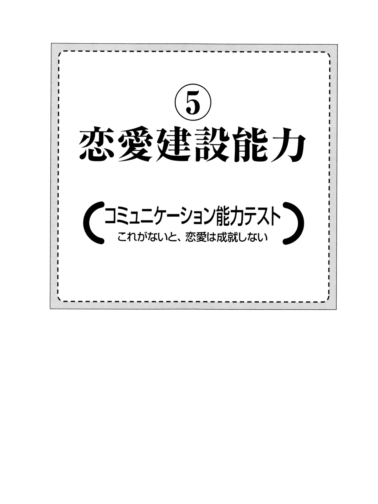
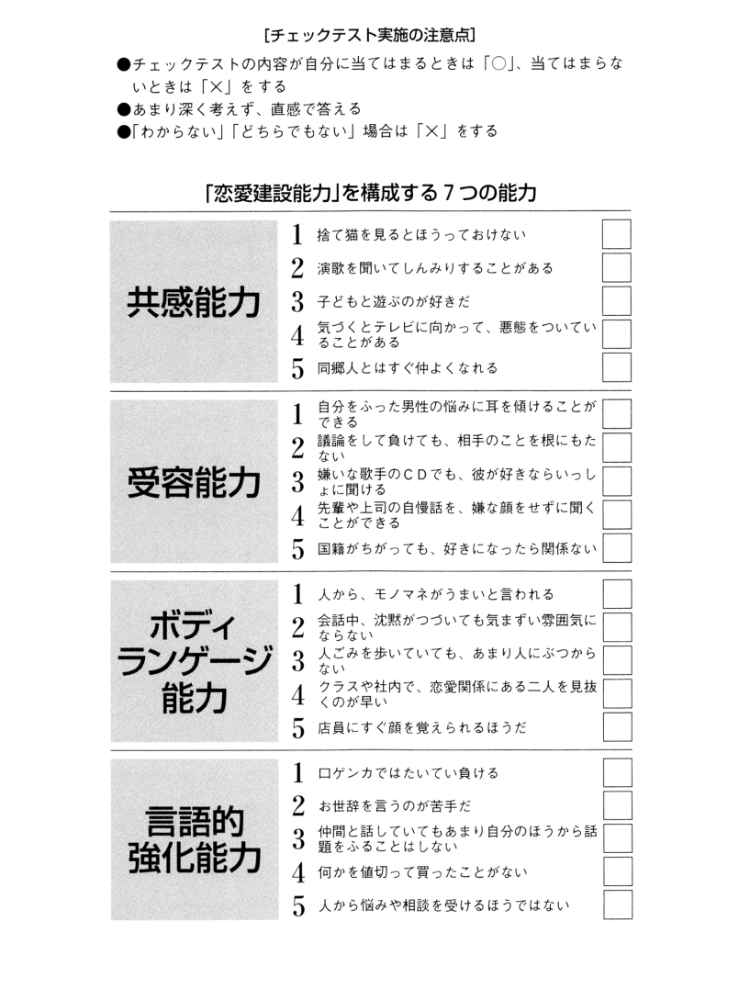
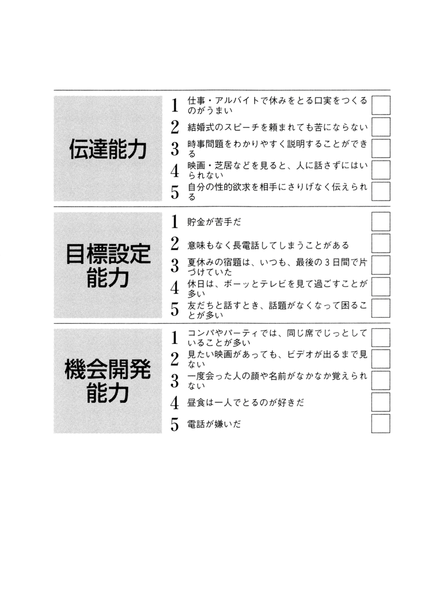
恋愛建設能力のみがき方（５） 共感能力
彼氏の喜び、悲しみをいっしょに感じることが、恋人への第一歩
ある男性がバイトを探していましたが、なかなか見つからずに落ち込んでいました。たかがバイト探しといっても、見つからなければ不安にもなるし、ストレスもたまります。そんな彼に恋人候補の女性が、「何よ、バイトぐらいでイラついて！」と言いました。それ以来、その女性は恋人候補から脱落したといいます。
この女性のどこが悪かったのか、わからない方も多いのではないでしょうか。じつは彼女には、相手とともに喜び、ともに怒り、ともに悲しむことができる「共感能力」が足りなかったのです。「共感能力」がある女性なら、おそらく「たいへんだけど、がんばって」「アタシも心あたり聞いてみようか」などと話しかけ、彼との関係をぶち壊すようなことはなかったはずです。彼のほうも、そうしたセリフを期待していたかもしれません。
恋愛とは、本来お互いの感情がぶつかり合いながら、次第にひとつになっていく過程でもあります。相手の感情の状態を敏感にキャッチして、それに応えていく能力が必要なのです。自分以外のものに共感できるということは、人を愛する第一歩を踏み出せたことになるのです。
「雨にぬれている捨て猫を見て、『ヤダ、きたない』と言うのを聞いたとき、彼女に対する気持ちがスーッと冷めた」という男性もいます。「共感能力」の低さは「気持ちが通じない」ことにつながります。
歯の浮くようなセリフをどんなにうまく言えたとしても、人間はこうした相手に、ほんとうの意味での信頼感は抱けないでしょう。
「共感能力」は幼稚園児でもすでに芽生えているという、心理学の調査結果があります。たとえば、一人の幼稚園児が泣いているとき、まわりの子どもがどんな行動を示すかという調査があるのです。幼稚園児の行動は、すこし離れて気にかけて見る、そばに寄っていく、なぐさめる、という３パターンに分かれるのですが、幼稚園児にしてすでに「共感能力」には差があるのです。人の感情を感じとるのはむずかしいことですが、「感じとろう」という姿勢を持っているかいないかでは、「共感能力」の高まり方もまったくちがってくるはずです。
この能力をみがくには、たとえば、テレビドラマの音を消し、役者の表情を読み、セリフを当てレコで入れてみるといった対話ゲームも効果的です。鏡で自分の表情をチェックするのもいいでしょう。おかしいときにちゃんと顔が笑っているか、腹が立ったときには怒った感情が表情に表われているのか、ときどき確認してみるのもいいでしょう。
恋愛建設能力のみがき方（５） 受容能力
あなたは彼氏を〝自分好みの男〟に変えようとしていませんか
「彼とケンカをしてしまったんです！」と、教え子が真剣な顔をして私に相談にきました。はじめて彼に手料理をつくってあげることになったときのことです。おふくろの味が好きな彼に合わせて、和食にしたのですが、そのなかの「ナスの煮物」がケンカの原因らしいのです。彼女のナスの切り方が彼の母親の切り方とちがうので、「それはおかしいよ、まず半分に切って......」と彼が教示しはじめたというのです。「べつにいいじゃない。うちはこうやって切るのよ」「そんなの絶対にヘンだ」「そんなこと言うなら、私、もうつくらないから！」というのが、ことのあらましらしいのですが......。
この〝ナスの煮物事件〟も、現在の二人にとっては笑い話ですが、じつはこんなささいなケンカでも、恋愛能力があるかないかによって、危機的な問題に発展しかねないのです。
人間だれしも、育った環境もちがえば、もともと持っている考え方や価値観もちがいます。いくら恋人同士であろうと夫婦であろうとちがうものはちがうのです。ところが、「彼・彼女は自分の恋人」という意識が強く働きすぎて、自分の価値観なり考え方を相手に押しつけ、〝自分好みの相手〟に変えようとする人がいます。「受容能力」は、自分とちがう部分をどれだけ受け入れられるかという能力で、包容力とも言いかえられます。
「受容能力」は人間のもっとも基本的な能力のひとつで、たとえば平和共存するためには、宗教や民族習慣などのちがいを受け入れなければうまくいかない、という大きな問題にもつながります。一般に、この「受容能力」が高い人は、自分の意見を通すだけでなく、相手の意見を聞き入れることがうまいですから、仕事面でも交渉上手です。
こんな経験はないでしょうか。まだ一度も話をしたことのない男性を好きになり、まだ相手がよくわからないぶん、どんどん自分のなかで理想化してしまいます。ところが、実際に話をしてみると欠点も見えてきます。このときに、こんなはずではなかったと思う人は「受容能力」の低い人で、人間だれしも欠点はあるわと、受け入れることのできる人は高い人です。もちろん、この能力が高ければ高いほど、恋愛のチャンスは多くなるのがおわかりいただけるでしょう。
この能力は、ふだんの心がけひとつで高められます。自分が苦手だと思っている人を避けるのではなく、すすんでそういうタイプの人と話をしてみることです。たとえ自慢話を聞かされても、それに耐えるのです。ひとつでもいいから共通点を探し出す努力をし、それをキーに会話をします。たとえば公園などで知らない人と出会ったときにも会話を成立させてみるなど、日常のなかに、能力アップのチャンスはいくらでも転がっているのです。
恋愛建設能力のみがき方（５） ボディランゲージ能力
彼氏のしぐさ、身なりから発信されている信号をキャッチしましょう
私の学生時代の友人に、たいしていい男というわけでもないのに、女の子をお茶に誘うのがものすごくうまい、シャクな男がいました。最初は彼の誘い方がうまいのだろうと思って、彼のセリフを研究してみたのですが、これといった巧みな話術でもないのです。彼いわく、だいたい誘いにのってきそうな女の子は、話をしなくてもわかるそうです。視線が落ち着かずキョロキョロ周囲を見回しており、ハデな格好をしている、といった具合です。つまり彼は言語ではないものから、女性の心理を読み取っていたわけです。恋愛を成功させるためには、この非言語的コミュニケーション能力、つまり「ボディランゲージ能力」が必要になってきます。
心理学的に言えば、じつは人間のコミュニケーションの大部分は、言語的ではなく非言語的なもので行なわれ、それが言葉以上の力を持っているのです。非言語的なものとは、表情、視線、姿勢、対人距離、着ているものなどをさします。たとえば、好意を抱いている人同士の距離は近くなるし、目立ちたがりやの人はハデな色の服を着る傾向にあります。非言語的なものが、じつは人の心をよく表わしているというわけです。
この「ボディランゲージ能力」には、さきほどの男性のように相手の心理をキャッチする受信能力と、自分から相手に意思を伝える発信能力のふたつがあります。いい印象を与えるセールスマンの条件を例にあげてみましょう。まず身なりやスタイルなど外見の好ましさ、ついで声のはっきりとした調子、そして表情のなごやかさです。素人 考えでは、セールスマンの売り込みは、一見、しゃべりがうまければよさそうに思うのですが、やはり相手を納得納 得 させ、相手の心をつかむには「ボディランゲージ能力」が必要なのです。
ボディランゲージを受信する能力がある人は、また発信させる能力も持ち合わせているという傾向があります。相手の気持ちをキャッチできるし、相手のちょっとした変化にも気づきやすいのです。ですから、「何も言わなくてもオレのことをわかってくれている」と思わせることもできるし、効率よく異性にアタックすることができます。この能力が、二人の関係を〝建設〟していくうえで、ひじょうに強い武器となるのです。
この能力をみがくには、受信、発信の両面から攻めてみるといいでしょう。まず、つねに人間観察することを心がけるのです。たとえば、電車のなかでどの人がつぎの駅で降りそうか、その動作や目線などから判断します。また、相手に自分の意思を明確に伝えられるよう、目を合わせて、ニッコリ笑って相手に近づくなど、そのときの心を表情に表わすことを習慣化するようにしたらいいでしょう。
恋愛建設能力のみがき方（５） 言語的強化能力
口下手なら〝聞き役〟に徹して、彼氏の気持ちをつかみましょう
タクシーに乗ると、たまにすごく愛想のいい運転手に出会うことがあります。最初はごく何気ない天気の話をしているのですが、いつの間にかすっかりのせられて、曲がる場所を言うのも忘れてしまうくらい話に夢中になってしまうのです。「うん、うん」とうまく相づちを打っているかと思えば、適当なところでこちらが興味を示すような質問をしてきたりします。「言語的強化能力」とは、このようないわゆる〝聞き上手〟のことです。
相手の話に相づちを打っているだけだと、消極的な人間と思われるのではないか、話題の少ないつまらない女と思われるのではないかという不安を抱く必要はないのです。相づちは、りっぱな接近行動なのです。会話上手というのは何もおもしろい話を聞かせる、笑わせるといったことだけではないのです。
ほとんどの人間が、自分の話に真剣に耳を傾けてくれる異性に好意を抱きやすいと思っていいでしょう。自分が口下手だと思うならなおさら、ムリにしゃべろうとせず、まず相手の話を真剣に聞くようにしてください。これもりっぱな〝恋愛建設〟になるのです。
心理学のカウンセラーは、ときに患者の恋愛の対象にされてしまいます。患者の悩みを真剣に聞くのが、カウンセラーの仕事です。ところがこの熱心さが、「こんなに真剣に私の話を聞いてくれるのは、私に愛情があるからだ」と誤解させるのです。映画監督と女優がくっつきやすいのも同じような理由でしょう。監督は女優の演技上の悩みにこたえているうちに、相手の気持ちのなかに入り込んでしまうらしいのです。
また、この能力をみがいていけば、相手をのせる、ほめるといったテクニックも身についてきます。何をほめれば相手が喜ぶのかは、相手の話を真剣に聞いていないとわかりません。自分のおしゃべりに夢中になって、相手の話に耳も傾けない女性にくらべれば、十回の相づちに一回の割合でも「アナタのそういうところは、ほんとうに偉いわ」などとほめることのできる女性のほうが、恋愛成功率は格段にアップします。
こんなに便利な能力を強化しない手はありません。自分が〝話し上手〟のタイプなら、意識的に聞き役にまわるようにしましょう。そして、かならず相手に話をさせるキッカケをつくるのです。「きのう、あれからどうしたの？」とか「その帽子どこで買ったの？」というようなものです。
「恋愛建設能力［言語的強化能力］テスト」のチェック項目が、口論でも負けない自信をつける、値切り交渉を成功させる、クラス・職場の〝相談役〟になれば、この能力がうまくみがかれます。
恋愛建設能力のみがき方（５） 伝達能力
好きなら、あれこれ考えずにひと言「好きです」と言えば大丈夫
ある男性が、友人の女性から電話を受けました。気軽に電話をするほどの仲ではないのですが、その日見た芝居がとてもおもしろかったので、だれかに話さずにはいられなかったと言うのです。芝居のあらすじ、演出の見事さ、役者のおもしろさ、印象に残ったセリフなど、実況中継さながらの彼女の〝報告〟と、自分なりの視点を加えた解釈や感想を語る彼女のおしゃべりの巧みさに、彼はすっかりまいってしまったといいます。それまでは、ただの女友だちの一人であった彼女は、その日を境に見事に恋人に昇格したのです。
この女性の例からもわかるように、言葉による伝達は恋愛においてもひじょうに重要な能力のひとつなのです。日本人は欧米人にくらべて、自分の気持ちを相手に伝えるのが下手な民族であるとされています。しかし、コミュニケーションにおける「伝達能力」が欠けていると、恋愛を〝建設〟していけないのです。
意外に多い恋の悩みは、「相手の気持ちがわからない」というものです。二人の関係に何か問題があるのかと聞くと、そうではないのです。二人の関係はうまくいっているし、会っていて楽しいのです。しかし、なんとなく不安だというわけです。
恋愛初期なら、お互いに好意を持っていることさえわかればいいのですが、そのうち相手は、どれくらい自分のことをたいせつに思ってくれているのかを伝えてほしい、と思うのが、恋愛心理です。相手にとってみれば、ときどき「好きよ」と言ってくれるだけで十分なのです。言葉による伝達を怠 っていると、気がつかないうちに小さなズレが出て、陥らなくてもいい不安に陥ることになるわけです。
この「伝達能力」をみがくには、自分の感じたことを自分の言葉で話す訓練をすることです。最初はつたない言葉でもいいのです。とにかく、人に自分の考えていることを正確に伝えるのです。
「恋愛建設能力［伝達能力］テスト」のチェック項目３にあるように、たとえば時事問題について話をするときも、新聞やニュースの受け売りではなく自分の言葉で表現するクセをつけていきます。日常生活でそうしたクセをつけておけば、好きな男性に対しても恥ずかしがらずに、自分の気持ちを伝達できるようになります。
南米ガイアナで、「人民寺院事件」という集団自殺事件を起こしたカリスマ的教祖ジム・ジョーンズは、たくみな演説で信者たちの心をとらえていました。しかしその演説を文章にすることは不可能でした。なぜなら、内容が矛盾だらけだったからです。単なるムードだけでなく、意味を伝えることの重要さを痛感させる事件です。
恋愛建設能力のみがき方（５） 目標設定能力
目的のない長電話で、「退屈女」「迷惑女」になっていませんか
最近は、携帯電話が若者の生活の必需品になっているようです。ドラマを見ていても、ケータイがストーリーの重要な小道具として使われています。主人公がもの憂 げな表情で窓の外を見つめる。と、そこにケータイの音が鳴る。「急に声が聞きたくなって」というパターンです。つきあいの長い二人なら、夜中のこうした電話も〝恋愛建設〟のためには効果的ですが、場合によってはただの「迷惑女」にしかならないこともあります。
ある男性に聞いた話ですが、ある女性とまだつきあいはじめて間もないころ、毎晩のように電話がかかってきました。最初のうちは、彼女の気持ちが真剣な証拠だと感激していたのですが、「いま何してた？」という、何の目的もない彼女の電話が迷惑に感じられるようになったといいます。
せっかく自分の気持ちを行動に表わしても、目標設定が甘い場合、相手にとっては単なる「迷惑女」「ウザッたい女」で終わってしまうといういい例です。この場合、恋愛を成功させるために必要なのが、「目標設定能力」です。コミュニケーションをうまく進めるためには、相手に何を伝えるのか、相手の何を聞きたいのかという目標があったほうがいいのです。目標設定があると、相手もコミュニケーションしやすいのです。さきの男性も、疲れているときでも何か目的がある電話のときは、疲れを忘れて話せると言っていました。「目標設定能力」のみがかれた人は、「恋愛建設能力［目標設定能力］テスト」のチェック項目５にあるように、友人と会っていても会話が途切れて困るということもないのです。「結局今日一日、何もしなかった」と悲しい気分で休日を終えることもありません。
これを恋愛に置き換えると、デートの場面でも「今日は彼の趣味について探ってみよう」「今日は彼を家に呼んで料理を作り、いいところを見せてやろう」など、行動に結びつく発想ができるのです。その発想が、〝恋愛建設能力〟に結びつくのです。
目標といっても、何も大それたことでなくてもいいのです。要するに、なりゆきまかせ、その場が楽しければいいという発想でいると、たった一回デートしただけでも、いきなりマンネリのような気分になりかねないのです。
この「目標設定能力」をみがくのも、やはりふだんの心がけが大事です。仕事の場面でもそうなのですが、いま何を相手にいちばん伝えたいのかを明確にするクセをつけることです。仕事の電話などは、いいトレーニングになるはずです。できるだけ短い時間で、端的に相手にこちらの用件を伝えるため、意識的に「何を話すか」「何を聞くか」という目標設定をしてみるクセをつけてみてはどうでしょう。
恋愛建設能力のみがき方（５） 機会開発能力
どんなに好きでも、遠くで見ているだけでは恋愛は発展しません
好きな男性とコミュニケーションをとるためには、当たり前のことですが、まず会わなくてはなりません。どんなに「好き、彼になってほしい」と思っていても、彼と接触しなければ、気持ちは伝わらないのです。そこで必要になってくる恋愛能力が、「機会開発能力」です。「機会開発能力」は、言いかえれば〝マメ能力〟なのです。足繁 く通う、ちょくちょく電話をする、何かといえばメールをする。マメな人はキッカケ作りの名人とも言えます。
日常生活をふり返って、電話をかけるのは面倒くさいから嫌い、人の集まる場所に行っても自分から話しかけたりしないというタイプの人は、ぜひともこの「機会開発能力」をみがく努力をしてほしいと思います。
心理学の研究で、アメリカの大学院の新入生が、どんな人と友だちになったかを分析したものがあります。それによると寮で同じ階段を使う人同士、隣同士という条件が圧倒的に多かったのです。人間には、接触頻度の多い人ほど好意を抱きやすいという心理法則があるのです。
某テレビ局のお見合い番組を見ていると、女性が男性の申し込みを断る理由に相当なパーセンテージで出てくるのが、「家が遠いから」というものがあります。恋愛において地理的な距離と心理的な距離が無関係でないことを、多くの人が感じている証拠でしょう。会えないことは、それだけで相手にとって不安材料になります。
しかし、こうした二人のあいだの距離も、この「機会開発能力」があれば、「離れていても大丈夫」という信頼感を生み出すことができるのです。
「機会開発能力」をみがくというと堅苦しいのですが、キッカケづくりのチャンスをふやすために〝マメ〟になればいいだけの話なのです。同じ会社内に好きな男性がいるのなら、わざと遠回りをしてでも、朝同じ電車に乗るとか、わざと同じ時間に退社してみるとか、いくらでも方法はあるでしょう。
努力のわりに報われないのではと感じる人もいるでしょうが、その小さな努力の積み重ねが男性の心を動かし、恋愛を〝建設〟していくのです。「わざわざ会いに来てくれたんだ」と思わせることができれば、かなり高得点をマークできたと思っていいでしょう。
この能力をみがくには、恋愛にかぎらずふだんからマメに行動してみることです。チェックテストでひっかかったものがあれば、すぐに実行に移してみてください。たとえば、本を一冊読んだら、友人に電話をしたりメールしてみるのもいいでしょう。
恋愛能力は、日々の実践でみがこう６
こうすれば、｢恋愛建設能力｣がアップ！【まとめと対策】
●テレビドラマの音声を消し、役者の表情を読みながらセリフを自分で入れてみる。鏡で自分の笑った顔、怒った顔をチェックする。......【共感能力】
●ふだんしゃべったことのない、苦手な先輩や上司とも積極的に話をして、自分との接点を見つけてみる。......【受容能力】
●電車のなかで、どの人がつぎの駅で降りそうかを、動作や目線などから予測する。表情や手振りなどを活用して話を伝える。......【ボディランゲージ能力】
●会話では聞き役に徹し、できるだけ相手から話を引き出す。すこしでも値切って買う習慣をつける。議論に口をはさむ。......【言語的強化能力】
●映画を見たら、評論家の意見など気にせず、自分の言葉で「どこがよかったのか」を相手に話してみる。......【伝達能力】
●デートでは「きょうは彼に家まで送ってもらおう」など、小さなことでいいから、毎回目標を設定してみる。......【目標設定能力】
●おもしろい本を読んだら、すぐに電話したりメールをしたりして伝える。コンパや飲み会では、できるだけ動きまわって話をする。......【機会開発能力】
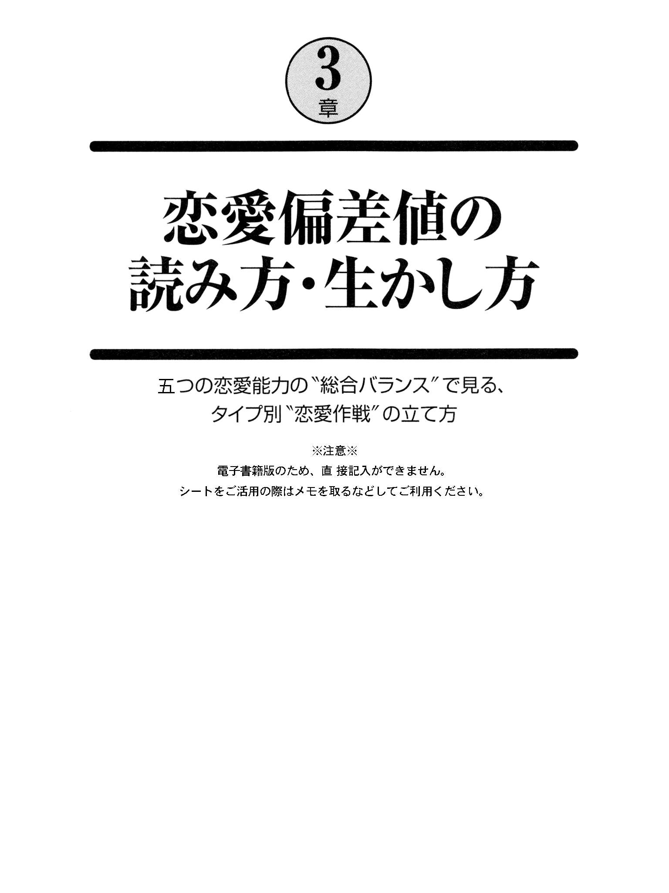
恋愛偏差値の出し方
恋愛偏差値は、五つの恋愛能力の〝総合バランス〟で決まります
２章では、五つの恋愛能力を測るチェックテストを行なってもらいました。この結果から、あなたの恋愛偏差値が求められるわけですが、この章では、出てきた恋愛偏差値をどう読み、どう生かし、どうみがいていくかをお話ししていきます。まずはじめに、恋愛偏差値の算出方法から説明しましょう。
つぎの「恋愛偏差値チェックテスト集計カード」をまず切り取ります。そして２章の「恋愛推進能力（行動能力）テスト」から順次行なってきたチェックテストの結果を、集計カードにメモします。このとき注意していただきたいのは、かならずしも○の数の合計が「得点」になるわけではないということです。たとえば、「恋愛推進能力（行動能力）テスト」の基礎体力の五つの質問項目のうち、三つに× がついたら、カードの「採点方法」にしたがって、× の数を合計した〝３〟が得点となります。「採点方法」に十分に注意して計算してください。
さらにつぎのページには、集計カードの記入例を載せました。この例でわかるように、太く囲んだ枠の（ａ）～（ｅ）の得点が、五つの恋愛能力それぞれの総合点になります。「コミュニケーション能力」はとくに重要な能力であるために、出てきた得点を２倍して総合点とします。
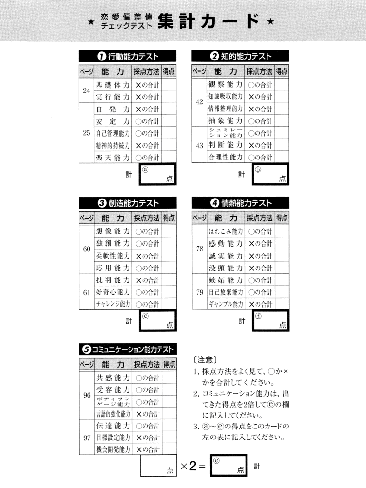
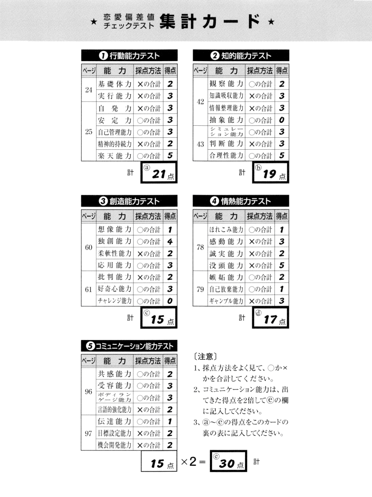
つづいて、チェックテストの集計から出てきた得点を、偏差値に換算します。これには、つぎの「恋愛偏差値チェックテスト診断カード」を利用してもらいます。そのつぎの記入例を見てください。まず集計カードに書き込んだ（ａ）～（ｅ）の得点を、「診断カード」の「得点」の欄に書き込みます。そして、この五つの得点を縦に合計した数字を「総合得点」の欄に記入します。あとは、それぞれの得点に対する偏差値を、後掲した「恋愛偏差値早見表」から探し出してＡ～Ｆの欄に記入します。たとえば記入例では「行動能力」の得点が21 点ですが、これを恋愛偏差値早見表の「行動能力」の項目にあてはめると、偏差値は57 ・０となります。
このようにしてＡ～Ｆの欄に偏差値をメモできたら、最後にその下の「恋愛偏差値分析チャート」を作成します。それぞれの偏差値を五角形の目盛りに記入していくのですが、（１）の「行動能力」（Ａ）が左上からはじまり、反時計まわりに進んで（５）の「コミュニケーション能力」が真上にくることに注意してください。最後に偏差値を線で結ぶと、五つの「恋愛能力」のバランスがひと目でわかる「分析チャート」が完成します。また、Ｆの偏差値は「総合恋愛偏差値」の欄に記入します。
総合恋愛偏差値を出してみますと、恋愛偏差値が五つの「恋愛能力」の〝総合バランス〟で決まることがおわかりいただけるでしょう。
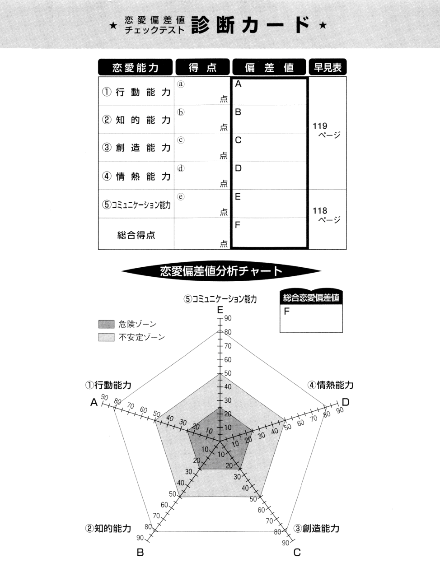
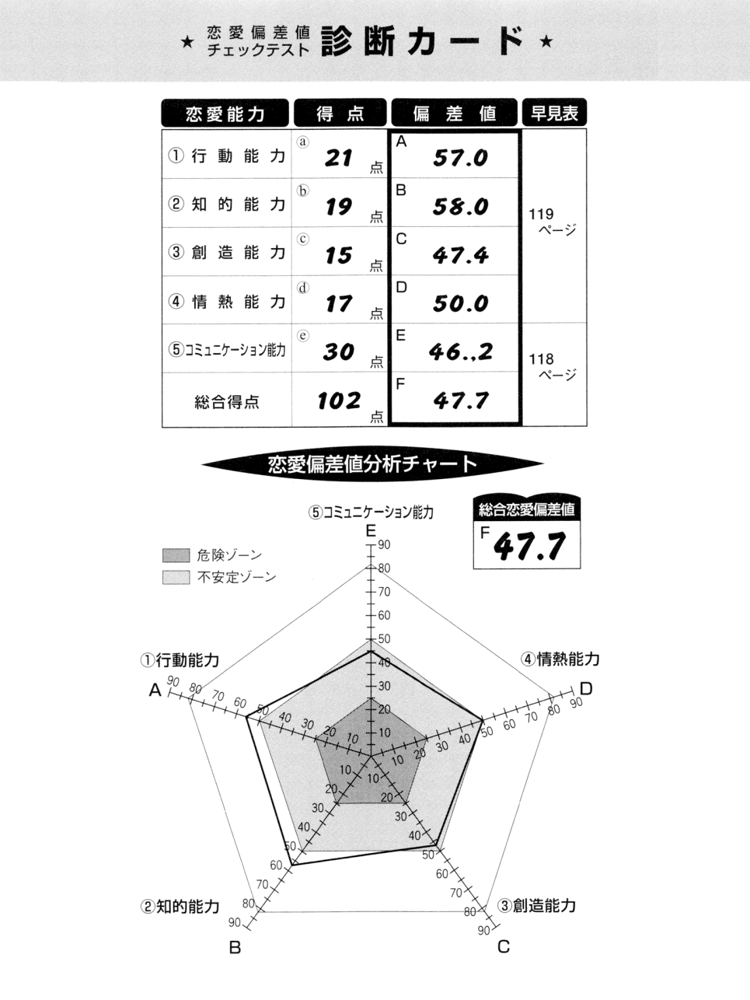
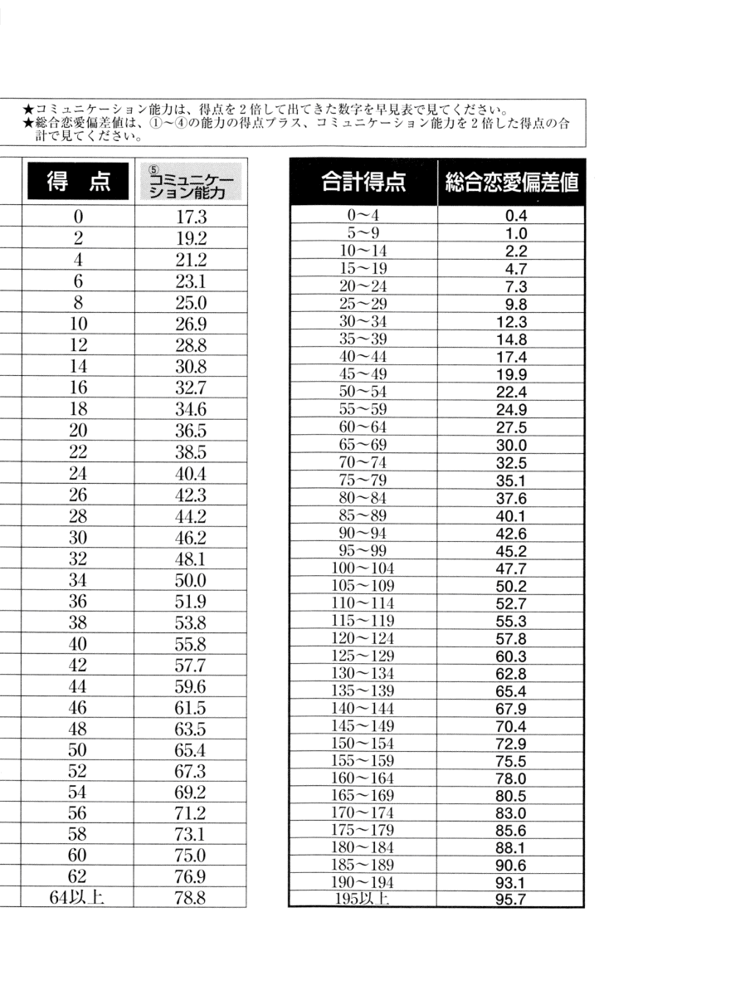
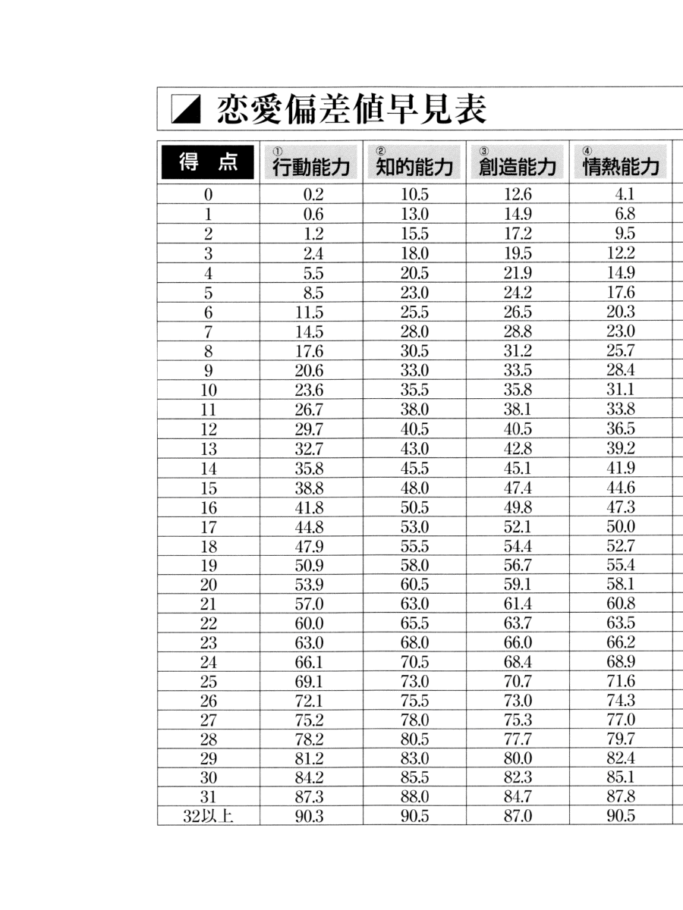
恋愛偏差値の読み方
「総合恋愛偏差値」から、自分自身の〝恋愛の傾向と対策〟がわかります
恋愛偏差値を読む場合にまず注目していただきたいのは、「総合恋愛偏差値」、五つの恋愛能力を総合した数値です。受験の場合は、たとえば数学が苦手でも、英語と社会ができれば合格は十分に可能ですが、こと恋愛能力に関しては、そうはいかないのが現実です。
というのも恋愛に必要な五つの能力というのは、それぞれ密接に関係していて、どれかひとつの能力が欠けているために、ほかの能力が生かせないという状況が出てくるからです。たとえば、いくら「情熱能力」があっても、「行動能力」が欠けていれば、その情熱を行動に移すことができません。つまり、恋愛偏差値を読むときには、五つの能力の総合的な〝評価〟を知ることが必要になるのですが、「総合恋愛偏差値」は、それを大づかみに示してくれるのです。
つぎの表は、自分の恋愛偏差値の持つ意味、その偏差値から導き出される大づかみな恋愛の傾向と対策をまとめたものです。まず、自分の総合恋愛偏差値の意味を知り、そのうえで、五つの恋愛能力の総合的なバランスを分析していけば、あなたに必要な恋愛能力の、効果的なみがき方が見えてくるはずです。
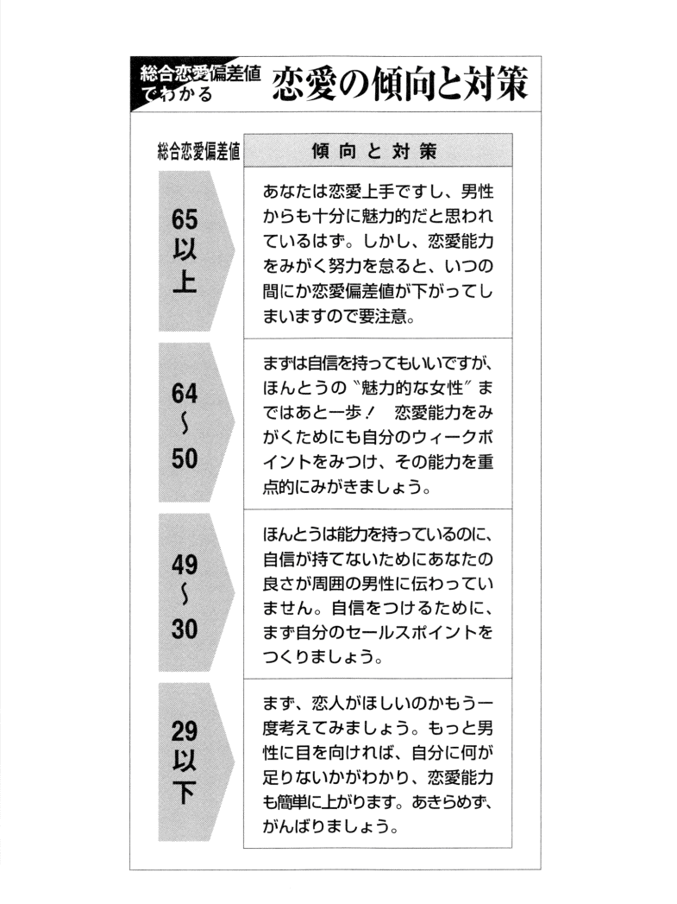
恋愛偏差値の読み方
「恋愛偏差値分析チャート」が教える、あなたの〝強化ポイント〟
五つの恋愛能力の、総合的なバランスを知ってもらう目的でつくったものが「恋愛偏差値分析チャート」です。この項では、分析チャートの読み方の基本をお話ししておきましょう。分析チャートを見ればおわかりいただけるように、五角形のなかには「危険ゾーン」「不安定ゾーン」という区域が設けてあります。まずは、自分の五つの能力の偏差値が、これらの区域のどこにはいっているかを見て自分に欠けている恋愛能力を知り、具体的にどうそれをみがいていくか、という〝恋愛作戦〟の参考にしていただければと思います。
まず、偏差値25 以下の「危険ゾーン」にはいっているものは、文字通り〝危険な状態〟を表わしています。もし恋愛でうまくいかないことがあれば、その大きな原因をつくっていると考えられるわけです。「不安定ゾーン」は、偏差値25 ・１以上50 未満の区域です。これが受験の偏差値であれば「ヤバイ」ということになるのでしょうが、恋愛偏差値と受験の偏差値はまったく別のもので、ここにはいるものは、評価としてはまず〝ふつう〟と考えてもらってもいいでしょう。
ただし残念ながら、その恋愛能力を〝武器〟として生かすにはあと一歩及ばないということです。「不安定ゾーン」の外側は、言ってみれば「安全ゾーン」であり、すぐれた恋愛能力を持っていることを示します。「危険ゾーン」「不安定ゾーン」にはいっている恋愛能力は、ともかくこれからの〝強化ポイント〟となるべきものです。
どこをみがくか、どうみがいていくかは、当然のことながら人によって違ってきます。たとえば、55 という同じ総合恋愛偏差値を持っていたとしても、分析チャートの形は人それぞれ違うため〝強化ポイント〟も当然違ってくるのです。
ここに、それぞれの人の恋愛偏差値をチャート化した最大の目的があるのです。恋愛偏差値を知っただけでは、恋愛能力をみがいていけないのです。恋愛能力のなかで、自分の〝弱点〟となるのはどこか、〝長所〟となるのはどこかを知って、はじめて正しい〝恋愛作戦〟が立てられるのです。
恋愛偏差値分析チャートを見ていくうえで、いちばんのポイントになるのが「コミュニケーション能力」です。「コミュニケーション能力」は恋愛能力の〝柱〟となるべきものです。恋愛偏差値をただやみくもにアップさせようとしても、効率的ではありません。「コミュニケーション能力」をどうみがいていくかに、恋愛偏差値アップのポイントが集約されているといっても過言ではないのです。それではつぎのページから、「コミュニケーション能力」を軸にした、分析チャートの具体的な生かし方についてお話ししていきましょう。
恋愛偏差値の読み方
「コミュニケーション能力」を軸に、正しい〝恋愛作戦〟を立てよう
自分の恋愛偏差値をどう読んで、どう恋愛に生かしていくか。具体的な〝恋愛作戦〟を立てられるように、本書では恋愛偏差値分析チャートを、現代の若者に見られる典型的な八つの型に類型化しました。つぎの項からは、それぞれの型について「コミュニケーション能力」を軸とした〝恋愛作戦〟を紹介していきますが、その前にたいせつなポイントをお話ししておきましょう。
恋愛偏差値をアップさせていくうえで、最大のポイントとなるのが「コミュニケーション能力」です。得点化するときに、この能力だけ２倍したことからもおわかりのように、五つの恋愛能力のなかで〝格別〟です。「行動能力」「知的能力」「創造能力」「情熱能力」の四つの恋愛能力の上に、これらを総括する形で「コミュニケーション能力」が存在するのです。
まず最初に知っておいていただきたいのは、「コミュニケーション能力」がないと、せっかく持っている他の能力を発揮できないということです。たとえばコンピュータと同じで、どんなにデータベースが豊富でも、人間との〝交信能力〟が悪い機械は使いにくいもの。どれだけ人間とコミュニケーションができるかが、コンピュータの価値を決めます。
つまり恋愛においても、「コミュニケーション能力」がその人の恋愛能力を決定づけているのです。その証拠に、自分の「コミュニケーション能力」の偏差値と、総合恋愛偏差値をくらべてみてください。数値がほぼ同じになっているはずです。
しかし、「コミュニケーション能力」は、それだけで単独に存在するものではなく、他の四つの能力を栄養分として育っている樹のようなものです。相手に伝える知識や、伝えようとする情熱があってはじめて相手と接することができるのです。
要するに、「コミュニケーション能力」と他の四つの能力が相互関係を保ちつつ、恋愛能力が成り立っているのです。
たとえば、「コミュニケーション能力」がみがかれれば、自然に他の恋愛能力もみがかれてくるといった〝法則〟のようなものでもあります。また、五つの能力のうち、ひとつでも決定的に欠けている能力があると、それに引きずられて恋愛能力が下がってしまいます。たとえば「情熱能力」が大きく欠けている場合、かりに「コミュニケーション能力」を十分に持っていたとしても、その力を発揮できなくなるのです。
それでは、具体的に「コミュニケーション能力」を軸とした〝恋愛作戦〟の立て方を見ていきましょう。なお、それぞれの恋愛能力の具体的なみがき方は２章を参考にしてください。
恋愛偏差値を生かす恋愛作戦 【体育会系突進型】
ときには「聞き上手」を演出して、恋愛を長つづきさせよう
他の能力にくらべて「行動能力」と「情熱能力」が突出し、分析チャートが〝カニの形〟のようになっているタイプを、「体育会系突進型」と名づけました。「行動能力」だけが突出している場合も、ほぼこのタイプに分類されると考えていいでしょう。
このタイプの最大の長所は、自分から積極的に動くためのパワーを十分に持っている点です。ただし、「コミュニケーション能力」が不足しているため、ともすれば、相手の気持ちを無視した行動に走りがちで、あらぬ誤解を受けてしまうケースも少なくないでしょう。
そのため、こちらから彼に積極的にアプローチしているにもかかわらず、相手が振り向いてくれなかったり、せっかくつきあいはじめてもいつも長つづきしないで終わってしまう、といった恋愛傾向にあるようです。
たとえば、「恋愛・即・結婚」といった短絡的な発想が知らず知らずのうちに彼に伝わってしまうという可能性もあるのです。
バイタリティーや情熱は、たしかに異性にとって大きな魅力になります。はじめのうちはその魅力だけでもたせることもできるでしょうが、それだけで突進すれば、その魅力が「マイペースな人」「男の気持ちのわからない人」というマイナス評価に早変わりするまでに、時間はかかりません。
せっかくの長所である「行動能力」や「情熱能力」を〝武器〟として生かすには、とにかく「コミュニケーション能力」を最優先でみがいてほしいものです。たとえば、デートでも〝聞き役〟に徹してみるなど、ちょっとしたことからはじめてみると、むずかしくありません。
総合的な「恋愛能力」は、ほぼ「コミュニケーション能力」とイコールの関係にあります。早い話、ほかにいくら高い「恋愛能力」があっても、相手に伝えることができなければ、それは実際の偏差値よりも低いレベルに落ちてしまうということなのです。
長所を「武器として正しく使う」方法を示すのが、「コミュニケーション能力」なのです。
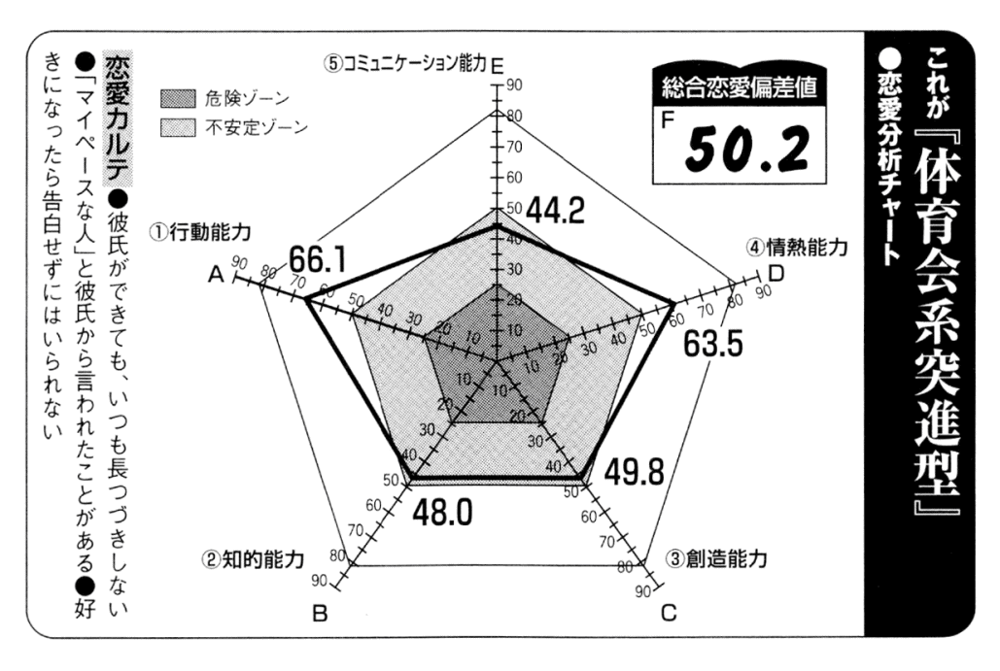
恋愛偏差値を生かす恋愛作戦 【恋愛不完全燃焼型】
〝いい人〟から〝情熱的な女〟への変身を、まず第一の目標に！
「コミュニケーション能力」の偏差値は、60 以上という、ひじょうに高い恋愛能力を持っているにもかかわらず、ほかの能力がほとんど「不安定ゾーン」にはいっています。まるでロケットのような五角形を描いているのが、「恋愛不完全燃焼型」の特徴です。
恋愛傾向は、男性とは比較的楽に友だちになれる、男友だちが多い、よく男性から相談を持ちかけられる、などが挙げられます。まさしく「コミュニケーション能力」のなせるわざです。しかし、まわりから見ればいくらでもチャンスがあるはずなのに、なぜか友だちどまりで恋人にはなれない。〝いい人〟で終わってしまうのです。
せっかくの高い「コミュニケーション能力」を、十分に生かしきれていない、もったいない例といえるでしょう。
「コミュニケーション能力」を生かすためには、まず「情熱能力」をみがいていくように心がけてみることです。このタイプは、好きな男性とのデートにもちこむことはできます。そして、そのあと家まで送ってもらってロマンチックな雰囲気にもなるのですが、なぜか、突然抱きしめられて唇を奪われる、といった情熱的なシーンに発展することがありません。あなたのボディランゲージがあまりにも防衛的なのかもしれません。
つまり人を愛するときにいちばん重要な「情熱能力」があなたに不足していると、男性の側も、〝あと一歩〟を踏み込むことができないのです。結果的に男性の目には、まじめな〝いいコ〟と思われるでしょうが、これではいつまでたっても友だちから恋人に昇格できないのです。
「情熱能力」をみがいたあとは、「行動能力」→「知的能力」→「創造能力」を順番にみがいていけば、さらに恋愛能力はアップします。
恋愛偏差値は、早い人で三週間ほどでみがかれます。それが可能なのがこのタイプで、その理由は、恋愛能力の基本となる「コミュニケーション能力」が高いため、他の能力を比較的簡単にアップできるからです。
せっかくの能力を持っているのですから、それを使わない手はありません。
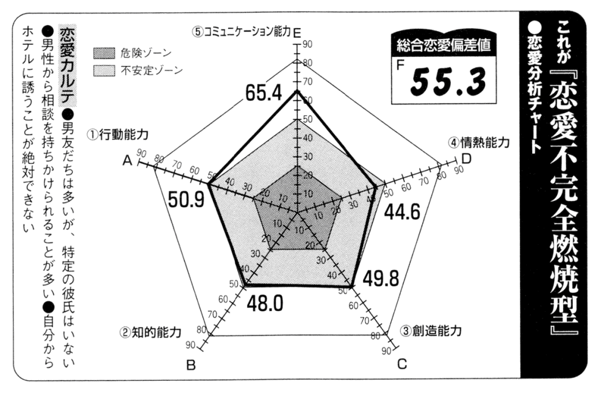
恋愛偏差値を生かす恋愛作戦 【男性不慣れ型】
挨拶をする、話しかけるという小さな成功体験が、恋愛の大きな自信を生みます
「コミュニケーション能力」の偏差値が50 未満で、その他の能力の多くも「不安定ゾーン」にはいる場合は、分析チャートに〝バランスのとれた小さな五角形〟が描かれることが多いものです。なかに「安全ゾーン」にかろうじてひっかかる能力がひとつふたつあっても、このタイプは「コミュニケーション能力」が低いために、総合恋愛偏差値は50 以下にとどまる傾向があります。
総じて男性に対して消極的で、自分からすすんで男性に声をかけられない、男性からアプローチがあっても逃げ腰になってしまう、というのが、このタイプの傾向のようです。自分から自信を持って積極的に動いたり反応することができないのは、男性に慣れていないことが原因でもあります。ですから、まずはもっと気楽に男性と話をする機会をつくって、いい意味で、〝男性慣れ〟してみることです。
もっと〝男性慣れ〟が必要という意味で、「男性不慣れ型」と命名しておきましょう。
男性の話を真剣に聞いてあげる、そして自分の話を男性に聞いてもらう。こんなちょっとしたことの積み重ねが、自信につながり、積極的な行動力にもつながっていくのです。
その意味で、五つの恋愛能力に関して言えば、いっぺんにあれもこれもみがこうとせずに、とにかく「コミュニケーション能力」に集中して、これをみがくように心がけてみましょう。
「コミュニケーション能力」をみがくことで、自分を表現する機会もふえてきます。そして当然、それに対する相手からの反応を受け取ることになります。その反応が、たとえばあなたの「知的能力」に関するものであれば、「知的能力」に対する小さな自信が生まれ、それがあなたの「知的能力」を高める突破口となります。
つまり「コミュニケーション能力」を伸ばすことで、ほかの四つの能力を同時に高めていく下地をつくるのです。
そのあとで心がけてほしいのは、「情熱能力」をみがくことです。自分のなかにある欲望や夢を掘りおこし、行動を起こすための原動力とすることも、このタイプには欠かせないポイントです。
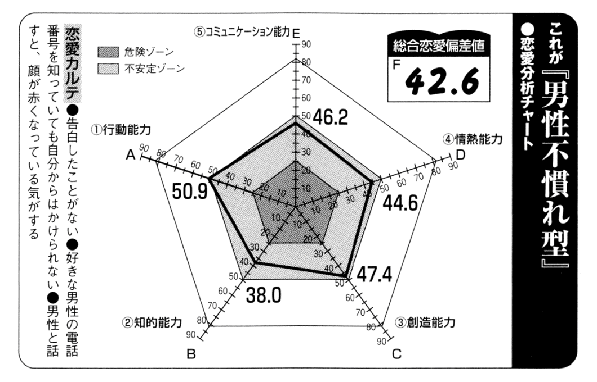
恋愛偏差値を生かす恋愛作戦 【女子校内 弁 慶 型】
男友だちがほめてくれたアピールポイントを、〝恋愛作戦〟の柱に
「コミュニケーション能力」の偏差値が、50 から60 前後のあいだの「安全ゾーン」に達し、とくに目立つような低い能力はありません。そして、だいたい偏差値の40 から60 のゾーンに、まずまずバランスのいい五角形が描かれますが、ひとつかふたつの能力が「不安定ゾーン」に引っかかっているというタイプも、今回のチェックテスト調査で比較的多く見られました。
「女同士なら自分のいい面を出してうまくやれるけど、男性とだと上手にコミュニケーションするのが苦手」、「気が合う人には自分をさらけ出せるけど、慣れない人や気の合わない人の前では、自分を抑えておとなしくなってしまう」という人が、このタイプに属する典型的な傾向のようです。
女子校出身者でよく見かけるタイプなので、「女子校内 弁 慶 型」と名づけました。
「コミュニケーション能力」は抜群というほどではありませんが、なかなかいいものを持っています。これだけの高さがあれば、もっと自分のいい面を男性にアピールすることができても、不思議はないのです。
なぜせっかく持っている「コミュニケーション能力」を、男性に対してはうまく発揮できないのか。
つまり、「不安定ゾーン」にはいっている能力が、「コミュニケーション能力」の足をひっぱっているのです。
「自分をわかってくれている仲間」のなかでは、ひとつかふたつ自信がないものがあっても、安心して自分を出せます。ところが、まだつきあっていない男性、つきあいはじめたばかりの男性など、自分のことをまだよく知らない人の前では、無意識のうちに自信のない部分を隠そうとする心理が働き、「コミュニケーション能力」にブレーキをかけてしまうのです。
この場合は「不安定ゾーン」にある能力を優先的に引き上げればいいでしょう。弱点をつぶすことが、本来持っている「コミュニケーション能力」を十分に生かすためには必要です。
これができれば、全体の偏差値もぐんぐんアップしていくでしょう。
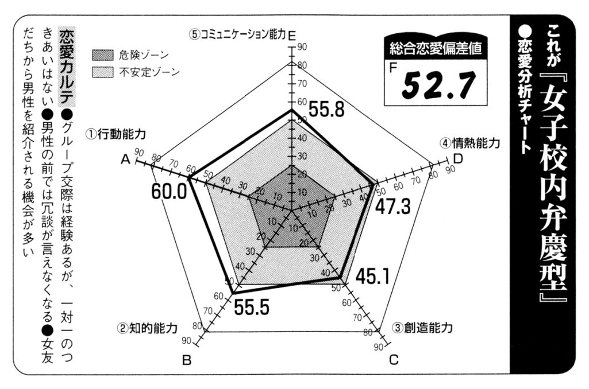
恋愛偏差値を生かす恋愛作戦【タナボタ無気力型】
「基礎体力」をつければ、好きな男性を追っかける〝気力〟もわいてきます
総合恋愛偏差値は55 から65 で、「コミュニケーション能力」も同じく55 から65 、その他の恋愛能力も「安全ゾーン」をキープしています。しかし、「行動能力」のみが「不安定ゾーン」にくっきりとめりこんでいるというタイプがいます。
このタイプの女性は、「彼氏はほしい。でも恋愛は面倒くさい」と思っている傾向にあります。それでも、いつか素敵な男性が現われることを心ひそかに期待していたりするのです。しかし、自分から積極的に行動を起こしたり、相手に働きかけたりできません。
分析チャートの「行動能力」のへこみが、それを証明しています。要するに恋愛に対して無気力でありながら、どこかで期待をしているのです。
そこで、このタイプを「タナボタ無気力型」と呼びます。
彼氏がほしいと思いながらも、恋愛に対して無気力になってしまう理由は、じつはこのタイプの女性は自分の能力を過小評価する傾向にあるからです。自分は恋愛下手だと思っているのです。ちょっとしたことでも、はじめてのことに挑戦するとなると、「たぶんムリだろう」→「面倒くさいからやめておこう」と考えます。そういう思考回路が、ますます「行動能力」を低下させているのです。
こうした無気力状態にどんどん陥っていくと、せっかく持っている他の能力を発揮できなくなってしまうのです。
このタイプはまわりから見ると、「あの子はけっこうモテるにちがいない」と思われるタイプです。実際、コミュニケーションもうまく、それなりに知識もあり、ユニークです。恋愛能力は十分に持っているのです。
はっきり言って、足りないのは「行動能力」のみ。これだけ「コミュニケーション能力」があるのですから、ちょっと発想を変えてみるだけで「行動能力」も簡単についてきます。
まずは、だれにでもできる「基礎体力」をつけることからはじめてみましょう。ちょっとした発想の転換で、恋愛能力をみがける素質をあなたは十分に持っているのです。
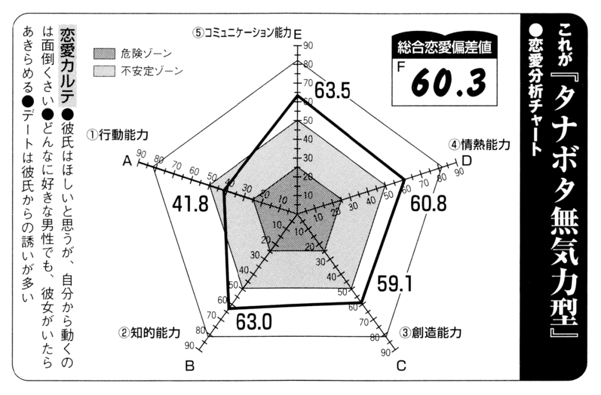
恋愛偏差値を生かす恋愛作戦 【恋愛の達人型】
恋愛能力の高さに甘んじていると、たいせつな彼氏を失うことに
恋愛偏差値分析チャートが、「安全ゾーン」で大きくきれいな五角形を描いているのがこの「恋愛の達人型」です。ほとんどの「恋愛能力」が偏差値60 から65 をマークし、総合恋愛偏差値が65 以上あれば、たいていこの型になります。
このタイプは、恋愛において理想的な恋愛能力の持ち主です。男性との関係には、おおいに自信を持っていいでしょう。男性にもあなたの持っている魅力は、十分に伝わっているはずです。「コミュニケーション能力」が高いと、他の能力も総じて高くなるという傾向がありますが、この型はその典型であるといえます。
他の四つの能力が、「コミュニケーション能力」の高さに引っぱられて、能力アップしているわけです。
しかし、総合恋愛偏差値が65 以上あり、分析チャートがこのタイプになっていても、いま現在彼氏がいないという人もいるでしょう。その場合、いまは自分にとってほんとうにたいせつな男性に出会うための準備期間と考えてほしいのです。たまたま出会えていないだけの話なのです。
しかし、この理想的なタイプにも注意点があります。恋愛能力というものは、一度ついたら落ちないというものではありません。油断をすると、いま現在60 台をキープしている恋愛能力も知らないあいだに落ちていくということもあるのです。
つまり、筋肉と同じなのです。鍛えれば鍛えるほど筋肉は発達していきますが、一度ついたからといってトレーニングを怠れば力は落ちていくのです。
とくに情報に関する「知的能力」と、恋愛をはじめるのに必要な「情熱能力」には要注意です。古い情報は役に立たないし、「男には苦労しない」などと思っていると、とたんに恋愛能力は落ちるでしょう。常に向上心を持って臨 んでください。
これだけバランスよく恋愛能力を身につけているのですから、「コミュニケーション能力」の高さを利用して、友人、仕事の関係者などとのつきあいから、自分をみがいていくコツを盗みましょう。あなたの恋愛はさらにいいものになるでしょう。
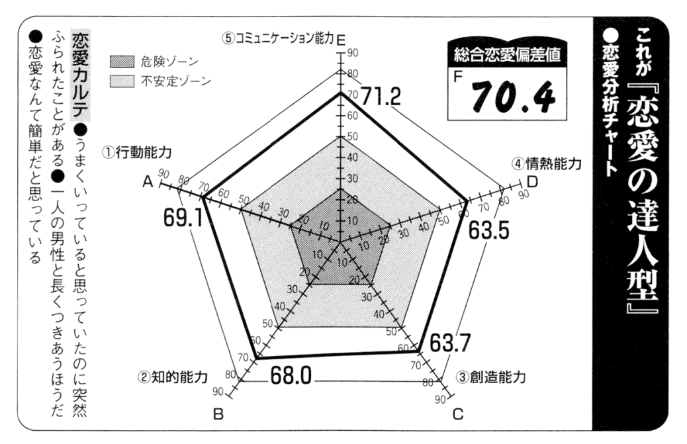
恋愛偏差値を生かす恋愛作戦 【ひとり芝居型】
〝恋は盲目〟から脱出して、彼氏を〝観察〟することからはじめよう
五つの恋愛能力のなかで「情熱能力」だけが、偏差値60 以上とひじょうに高く、分析チャートの形が大きく右側に偏っているのがこのタイプです。
「情熱能力」が高いだけに、このタイプの女性の恋愛集中度はものすごいものがあります。好きになったら昼も夜もなく会いに行く。彼のほしいと言ったものは、見つかるまで何軒でも探してまわる。彼とデートするためなら一時間くらい平気で待ってしまう。情熱を示されれば、男性も心を打たれずにはいられません。恋愛のはじまりは、それでもいいでしょう。
しかし、これが行き過ぎると「危ない人」「濃くて重そう」という印象を男性に与え、やがて「一人で盛り上がっちゃって」となってしまいます。
そこで、このタイプの女性を、少々きついかもしれませんが「ひとり芝居型」と命名しました。
恋愛には、ある程度ののめりこみが必要です。「情熱能力」に欠けていると、友情にはなっても愛情に変わらないからです。しかし、とりあえず盛り上がっただけでは、あとがつづきません。このタイプでとくに危険なのは、「コミュニケーション能力」が50 前後で、しかも「知的能力」が「不安定ゾーン」にはいっている場合です。
じつは、この情熱的なのめりこみが〝危ない〟方向に突き進むのを軌道修正してくれるのが、「知的能力」です。当たり前のことですが、理性と感情は相対するものです。このタイプの女性は感情面ばかりが強いために恋愛で失敗してしまうのです。理性面を意識的に補強してバランスをとりましょう。
そしてつぎに「コミュニケーション能力」をみがいていくのです。「コミュニケーション能力」は、恋愛における重要な能力というだけでなく、恋愛能力全体のバランスを保つ役目も果たしているからです。
「知的能力」をみがくことで得た彼が喜ぶ情報も、〝恋は盲目〟から脱出して、相手がはっきり見えるようになったとき、はじめて効果を発揮することでしょう。
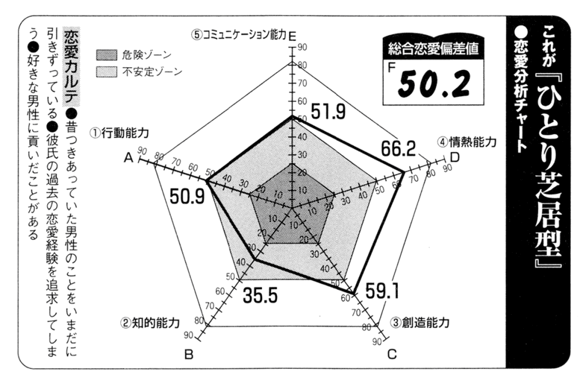
恋愛偏差値を生かす恋愛作戦【アイドル研究会型】
頭のなかにある〝彼氏の偶像〟を破壊するのが、〝恋愛作戦〟の基本
恋愛偏差値分析チャートが大きく左半分に偏 り、「知的能力」だけが突出しているのがこのタイプです。「コミュニケーション能力」をはじめとする他の四つの恋愛能力が、偏差値50 前後にとどまっているのに対して、「知的能力」は60 から70 をマークしているはずです。
このタイプの女性は、一見すると男性に興味がないタイプに見られがちですが、興味、関心はもちろん人並みに持ちあわせています。ただ、自分から積極的に話しかけたり、お茶や映画に誘ったりということはしない傾向にあるのです。
好きな男性の情報を仕入れたり、観察しているだけでなんとなく恋愛を楽しめる面を持っているのです。
実際に接するよりも、自分のなかで好きな男性を偶像化して楽しむという意味から、このタイプを「アイドル研究会型」と呼ぶことにします。
どちらかと言えば、〝オタク〟の傾向があるのです。自分が興味あるものを徹底的に追求するのはいいことですが、恋愛においてその能力だけが勝ってしまうと、目の前にいる男性に対して行動をとれなくなります。
そして、だんだん生身の人間に接するのが恐くなるのです。人と話をしなくなるから、ますます恋愛に必要な「コミュニケーション能力」が低下していきます。結果として恋愛偏差値も下がっていく、という悪循環に陥るわけです。
このタイプの女性の〝恋愛作戦〟のいちばん大きなポイントは、自分の頭のなかでつくりあげた偶像を破壊することでしょう。どんなにアイドルが好きでも、偶像と恋愛はできないのです。
まず、現実の世界で、実際に目の前にいる男性に接近してみることです。そのためにはやはり、「コミュニケーション能力」をみがいていくことがたいせつになってきます。
最初は「恋愛しよう」と思わなくてもいいでしょう。友だちからはじめればいいのです。
そのつぎに「情熱能力」をみがき、分析チャートの形をできるだけ正五角形に近づけていけばいいでしょう。
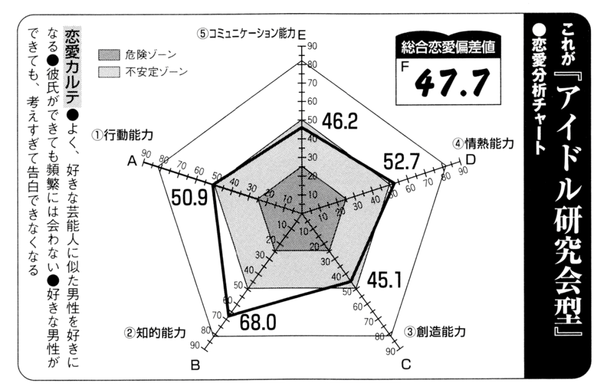
恋愛能力は、日々の実践でみがこう７
こうすれば、｢恋愛偏差値｣がアップ！【まとめと対策】
【体育会系突進型】
●会話では〝聞き役〟に徹し、「マイペースな人」から「男の気持ちのわかる女性」へと、イメージ・チェンジを試みる。
【恋愛不完全燃焼型】
●「情熱能力」をみがいて、〝いい人〟からの脱 皮 をはかる。
【男性不慣れ型】
●「コミュニケーション能力」を高めながら、男性と接する機会をふやし、そのなかで自信を積み重ねていく。
【女子校内弁慶型】
●「不安定ゾーン」にある能力を最優先でみがくことで、自信を持って自分をアピールできる積極性を身につける。
【タナボタ無気力型】
●階段をのぼっても息切れしない「基礎体力」をつけ、「面倒くさいから......」という思考回路を断ち切る。
【恋愛の達人型】
●高い「恋愛能力」に安心していると危険。
【ひとり芝居型】
●「知的能力」と「コミュニケーション能力」をバランスよく伸ばし、〝恋は盲目〟の状態から脱する。
【アイドル研究会型】
●頭のなかにある男性の〝偶像〟を破壊するために、「コミュニケーション能力」を鍛えて、生身の男性を知る。
あとがき
「恋愛偏差値」という言葉を世に出したのは、いまから十年ほど前のことです。編集者の皆さんと飲んでいるときに、だれが言うともなく「恋愛にも〝偏差値〟みたいなものがありますよね」という話になりました。
もちろん、賛否両論。「受験や学力の偏差値だけでも若者を苦しめているのに、このうえ、恋愛にまで偏差値がしゃしゃりでるのかよ！」という感情的なものから、「恋愛の一回性」「実在的な限界状況としての恋愛」といった哲学的な洞察にいたるまで、さまざまな疑問や否定論が噴きだしたものです。
確かに恋愛ほど当事者の個性が反映する現象もないわけで、「この世にふたつと同じ恋愛はない」というのも事実です。ただもう一方で、恋愛に関する個人差には、何となく優劣のようなモノがつきまとっているのも事実です。単純な話、モテモテのプレイボーイもいれば、恋愛とはまったく無縁な「いい人」もいるわけです。デートに誘われる回数には歴然とした個人差があります。
そして人間的に見れば、けっこう悪い奴なのに女性を口説くことにかけては「上手い」男性も確かにいます。また、何度も同じような悪い男に引っかかっては「泣き」を見る可哀想な女性もいますし、いつの間にやら人もうらやむようなオシドリ夫婦にちゃっかり納まっている幸せ者もいます。モテる人、モテない人、こうした違いには、当然、何らかの「能力」が関係していると考えられます。
そして恋愛が「能力」なら、その気になればそうした能力を身につけることもできるでしょうし、その能力にみがきをかけることもできるはずです。しかも能力なら、何らかの「ものさし」で測ることができます。「ものさし」で測ってみて、足りないところや弱点がわかったら、そこを伸ばせばいいのです。「恋愛偏差値」は、そんな「ものさし」として生まれました。
当初は、男性用の「ものさし」としてつくられ出版された「恋愛偏差値」ですが、今回前沢利加子さんをはじめとする世界文化社の皆様の応援をいただいて、新たに「女性用」として生まれ変わることになりました。この十年で主体的な生き方を選ぶ女性の数は急増しつつあります。受け身と待ちの姿勢から、自分が主人公となって能動的に人生を切り開いていく、そんな姿に拍手を送るのは決して僕らだけではないでしょう。恋愛だけでなく、人生を前向きに、自由に生きるためのきっかけとしてご活用いただければ幸いです。
富田 隆
本書は、２００２年に世界文化社から発行された『あなたの恋愛力をみがく 恋愛偏差値』を編集し、電子書籍化したものです。
～あなたの恋愛力をみがく～ 恋愛偏差値 Love Quotient
発行日 平成28 年８月５日
著者 富田 隆
企画・編集 株式会社イズムインターナショナル
発行 ＳＵＭＩＤＡ出版
発行所 〒１６９－００５１
東京都新宿区西早稲田１－２２－３
早稲田大学インキュベーションセンター